100 AI People to Watch in 2027: The Engineers, Researchers and Founders Building What Comes Next
The 100 people below aren't the ones you already know. They contributed research, maintain open-source projects, build companies or shape the rules around AI. I selected them for a documented contribution and a concrete question to follow into 2027, rather than for a follower count or a presumed personal fortune.
I start with records: university biographies, papers, company statements and funding announcements. I distinguish what each source establishes from what it suggests. Company valuations are separate from personal wealth, fundraising discussions from closed rounds, and historical research credits from current jobs. Education gaps remain explicit rather than being filled from promotional biographies.
The list has five sections: frontier researchers, infrastructure engineers, founders, applied AI by industry, and people in safety, policy, investing and media. Numbering follows section order. It is not a ranking, and the section counts describe this editorial selection rather than the demographics or importance of the industry.
The 100 at a glance.
Choose a field, find a name or follow a company. Each person has one primary discovery tag; these counts describe our selection, not the industry.
100 of 100 people. Numbers follow chapter order, not rank.
Open the complete people index 100 entries
| # | Name | Role and organization | Section |
|---|---|---|---|
| 1 | Alexander Wei ↗ Researcher | OpenAI · Research scientist | Frontier research |
| 2 | 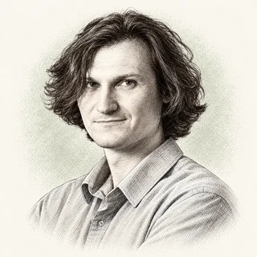 Jerry Tworek ↗Founder | Core Automation · Founder; former OpenAI reasoning leader | Frontier research |
| 3 | Jason Wei ↗ Researcher | Meta Superintelligence Labs · Researcher | Frontier research |
| 4 | Hongyu Ren ↗ Researcher | Meta hiring report / OpenAI o1 record · Researcher; reported Meta hire, June 2025 | Frontier research |
| 5 | Sholto Douglas ↗ Researcher | Anthropic / reinforcement learning · Research discussed in a first-person interview | Frontier research |
| 6 | 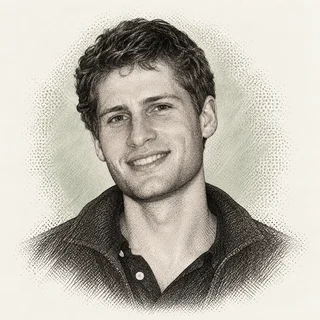 Joshua (Josh) Batson ↗Researcher | Anthropic interpretability · Circuits project lead, 2025 research record | Frontier research |
| 7 | 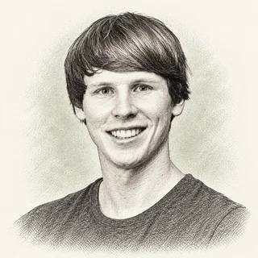 Julian Schrittwieser ↗Researcher | AlphaProof research · Contributor describing the project’s published work | Frontier research |
| 8 | Neel Nanda ↗ Researcher | Google DeepMind · Mechanistic interpretability team lead | Frontier research |
| 9 | Jack Parker-Holder ↗ Researcher | Google DeepMind · Research scientist, personal-page record | Frontier research |
| 10 | Lilian Weng ↗ ResearcherWriter | Lil'Log / reported OpenAI role · Research writer; reported OpenAI return, July 2026 | Frontier research |
| 11 | Liam Fedus ↗ Founder | Periodic Labs · Co-founder, founding announcement | Frontier research |
| 12 | 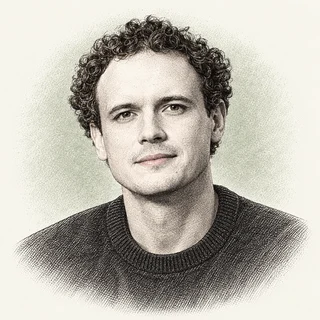 Misha Laskin ↗Founder | Reflection · Co-founder and CEO, NVIDIA announcement | Frontier research |
| 13 | Luo Fuli ↗ Researcher | Xiaomi MiMo · MiMo team lead, September 2026 report | Frontier research |
| 14 | 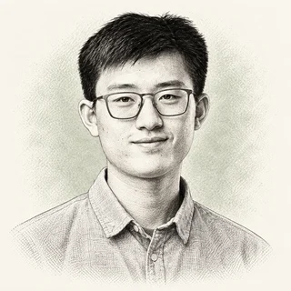 Yao Shunyu (Vinces Yao) ↗Researcher | Tencent · Chief AI scientist, December 2025 report | Frontier research |
| 15 | 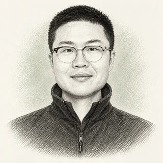 Lin Junyang (Justin Lin) ↗Founder | Pragmatik Labs; former Qwen lead · Founder, August 2026 announcement | Frontier research |
| 16 | Yang Zhilin ↗ Researcher | Kimi research · Kimi K2 technical-report co-author | Frontier research |
| 17 | 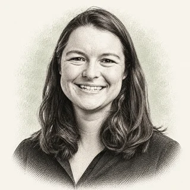 Chelsea Finn ↗FounderResearcher | Stanford / Physical Intelligence · Assistant professor and co-founder | Frontier research |
| 18 | 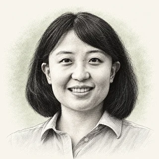 Sherry Yang ↗Researcher | NYU / Google DeepMind · Assistant professor and staff research scientist | Frontier research |
| 19 | Levent Alpöge ↗ Researcher | Anthropic, dated attribution · Researcher, described as an Anthropic employee in September 2026 | Frontier research |
| 20 | 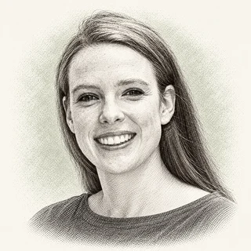 Sara Hooker ↗Researcher | Adaption · AI researcher | Frontier research |
| 21 | 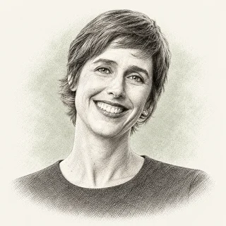 Joelle Pineau ↗LeaderResearcher | Cohere · Chief AI Officer | Frontier research |
| 22 | Woosuk Kwon ↗ Founder | Inferact / vLLM · Co-founder named in launch record | Infrastructure |
| 23 | Ying Sheng ↗ Founder | RadixArk / SGLang · Co-founder and CEO, 2026 event biography | Infrastructure |
| 24 | 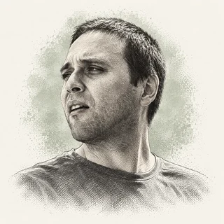 Georgi Gerganov ↗Engineer | ggml / llama.cpp · Creator and project steward | Infrastructure |
| 25 | Tri Dao ↗ Engineer | Together AI; Princeton · Chief scientist; visiting research scholar | Infrastructure |
| 26 | Daniel Han ↗ Founder | Unsloth · Founder | Infrastructure |
| 27 | Omar Khattab ↗ Engineer | MIT / DSPy · Assistant professor | Infrastructure |
| 28 | Lysandre Debut ↗ Engineer | Hugging Face Transformers · Co-author of the v5 announcement | Infrastructure |
| 29 | Erik Bernhardsson ↗ Founder | Modal · Founder and CEO | Infrastructure |
| 30 | 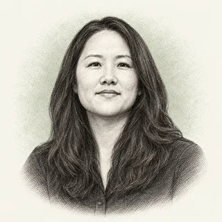 Lin Qiao ↗Founder | Fireworks · Co-founder and CEO | Infrastructure |
| 31 | 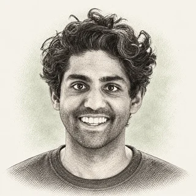 Tuhin Srivastava ↗Founder | Baseten · CEO and co-founder | Infrastructure |
| 32 | Gorkem Yurtseven ↗ Founder | fal · Co-founder | Infrastructure |
| 33 | Jeffrey Morgan ↗ Founder | Ollama · Founder, YC record | Infrastructure |
| 34 | Simon Hørup Eskildsen ↗ Founder | turbopuffer · Co-founder | Infrastructure |
| 35 | Ankur Goyal ↗ Founder | Braintrust · Founder, first-person company announcement | Infrastructure |
| 36 | Anastasios Angelopoulos ↗ Founder | Arena · Co-founder and CEO | Infrastructure |
| 37 | David Soria Parra ↗ Engineer | Model Context Protocol · Lead maintainer | Infrastructure |
| 38 | Gavin Uberti ↗ Founder | Etched · Co-founder and CEO | Infrastructure |
| 39 | Reiner Pope ↗ Founder | MatX · Co-founder and CEO | Infrastructure |
| 40 | Sharon Zhou ↗ Leader | AMD · AI Chief of Staff, 2026 event listing | Infrastructure |
| 41 | Jerry Liu ↗ Founder | LlamaIndex · Co-founder and CEO | Infrastructure |
| 42 | Anton Osika ↗ Founder | Lovable · Co-founder, KTH award record | Founders & builders |
| 43 | 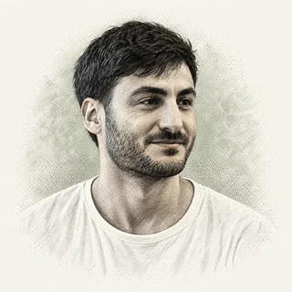 Maor Shlomo ↗Founder | Base44 / Wix · Founder associated with the acquired product | Founders & builders |
| 44 | Mati Staniszewski ↗ Founder | ElevenLabs · Co-founder | Founders & builders |
| 45 | Brendan Foody ↗ Founder | Mercor · Co-founder and co-CEO | Founders & builders |
| 46 | 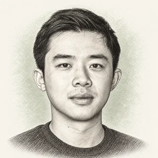 Jesse Zhang ↗Founder | Decagon · Co-founder and CEO | Founders & builders |
| 47 | Matan Grinberg ↗ Founder | Factory · Co-founder and company-announcement author | Founders & builders |
| 48 | Mukund Jha ↗ Founder | Emergent · Co-founder and CEO, company announcement | Founders & builders |
| 49 | Cristóbal Valenzuela ↗ Founder | Runway · Co-founder and co-CEO, 2026 event record | Founders & builders |
| 50 | Kareem Amin ↗ Leader | Clay · CEO and company-update author | Founders & builders |
| 51 | 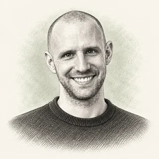 Jan Oberhauser ↗Founder | n8n · Founder and CEO | Founders & builders |
| 52 | Robin Rombach ↗ Founder | Black Forest Labs · Co-founder, Stanford event record | Founders & builders |
| 53 | 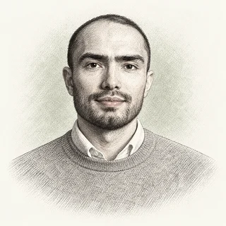 Alex Mashrabov ↗Founder | Higgsfield · CEO and co-founder, 2026 event record | Founders & builders |
| 54 | Grant Lee ↗ Founder | Gamma · Co-founder and company-announcement author | Founders & builders |
| 55 | James Cadwallader ↗ Founder | Profound · Co-founder and CEO | Founders & builders |
| 56 | Noah Shinn ↗ FounderResearcher | Instinct / Reflexion research · Researcher and founder, September 2026 report | Founders & builders |
| 57 | Lourdes Agapito ↗ FounderResearcher | UCL / Synthesia · Professor and co-founder, UCL record | Founders & builders |
| 58 | Demi Guo ↗ Founder | Pika · CEO and co-founder | Founders & builders |
| 59 | Mikey Shulman ↗ Founder | Suno · Co-founder and CEO | Founders & builders |
| 60 | 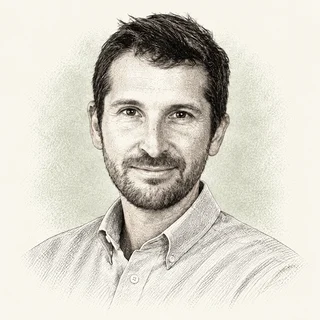 Bar Winkler ↗Leader | Wonderful · CEO, company team record | Founders & builders |
| 61 | Chris Pedregal ↗ Founder | Granola · Product founder associated with dated release notes | Founders & builders |
| 62 | 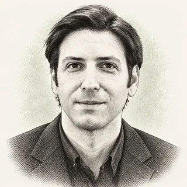 Zachary Lipton ↗Researcher | Abridge · Chief Scientific and Technology Officer | Applied AI |
| 63 | Nikhil Buduma ↗ Founder | Ambience Healthcare · Co-founder and CEO | Applied AI |
| 64 | Zachary Ziegler ↗ Founder | OpenEvidence · Founder identified by investor record | Applied AI |
| 65 | 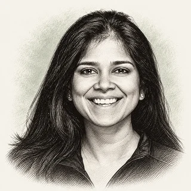 Suchi Saria ↗Founder | Bayesian Health · Founder | Applied AI |
| 66 | Joshua Meier ↗ Founder | Chai Discovery · Co-founder, investor account | Applied AI |
| 67 | Brian Hie ↗ Researcher | Stanford / Arc Institute · Researcher and Evo 2 co-senior author | Applied AI |
| 68 | Max Jaderberg ↗ LeaderResearcher | Isomorphic Labs · President, effective January 2026 | Applied AI |
| 69 | 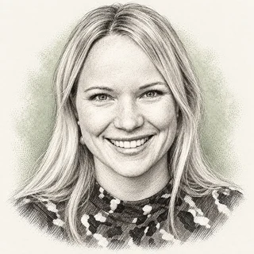 Emma Lundberg ↗Researcher | Stanford / Human Protein Atlas · Associate professor and Cell Atlas director | Applied AI |
| 70 | 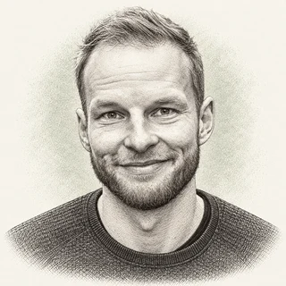 Karol Hausman ↗FounderResearcher | Physical Intelligence · Co-founder, personal research record | Applied AI |
| 71 | 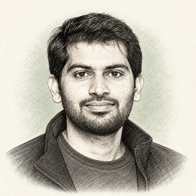 Deepak Pathak ↗FounderResearcher | Skild AI / Carnegie Mellon · Co-founder and CEO; CMU researcher | Applied AI |
| 72 | Bernt Øivind Børnich ↗ Founder | 1X · Founder and CEO, product announcement | Applied AI |
| 73 | 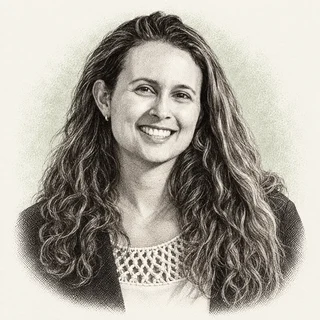 Carolina Parada ↗Researcher | Google DeepMind robotics · Gemini Robotics announcement author | Applied AI |
| 74 | Max Junestrand ↗ Founder | Legora · CEO and co-founder, 2026 event record | Applied AI |
| 75 | Gabriel Pereyra ↗ Founder | Harvey · Co-founder and President, 2024 announcement | Applied AI |
| 76 | George Sivulka ↗ Founder | Hebbia · Founder and CEO, company announcement | Applied AI |
| 77 | Gabriel Stengel ↗ Builder | Rogo · Company financing-announcement author | Applied AI |
| 78 | Antoine Bordes ↗ Researcher | Helsing · Chief Scientist, January 2026 record | Applied AI |
| 79 | Oege de Moor ↗ FounderResearcher | XBOW · Founder associated with the company’s security research | Applied AI |
| 80 | 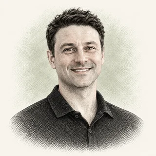 Ekin Dogus Cubuk ↗Founder | Periodic Labs · Co-founder, company launch record | Applied AI |
| 81 | 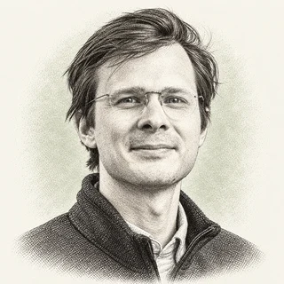 Jonathan Godwin ↗Leader | Orbital Industries · Chief Executive Officer | Applied AI |
| 82 | 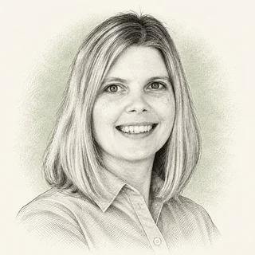 Kristen DiCerbo ↗Educator | Khan Academy · Chief Learning Officer | Applied AI |
| 83 | 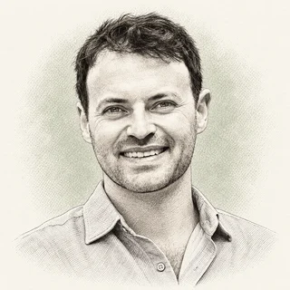 Alex Kendall ↗Founder | Wayve · Co-founder and CEO | Applied AI |
| 84 | 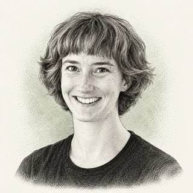 Beth Barnes ↗Founder | METR · Founder and CEO | Safety, policy, capital & media |
| 85 | Marius Hobbhahn ↗ Founder | Apollo Research · CEO and co-founder | Safety, policy, capital & media |
| 86 | 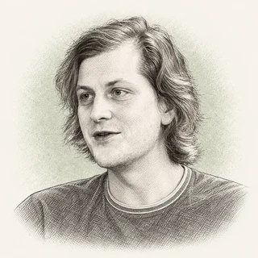 Buck Shlegeris ↗Leader | Redwood Research · Chief Executive Officer | Safety, policy, capital & media |
| 87 | 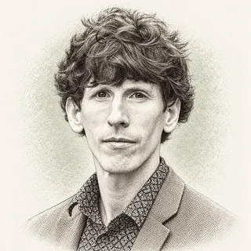 Owain Evans ↗Researcher | Truthful AI · Research-team lead | Safety, policy, capital & media |
| 88 | Dean W. Ball ↗ Policy | OpenAI / FAI · Head of Strategic Futures, announced July 2026 | Safety, policy, capital & media |
| 89 | Lennart Heim ↗ Researcher | Compute governance research · Training-compute paper co-author | Safety, policy, capital & media |
| 90 | Kai Zenner ↗ Policy | European Parliament · Digital policy adviser, OECD biography | Safety, policy, capital & media |
| 91 | 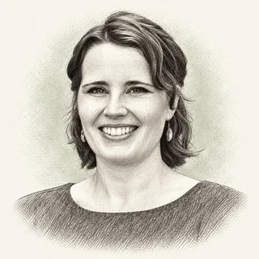 Helen Toner ↗Policy | CSET · Executive director | Safety, policy, capital & media |
| 92 | Sarah Guo ↗ Investor | Conviction · Founder and investment-thesis author | Safety, policy, capital & media |
| 93 | Nathan Benaich ↗ Investor | Air Street Capital · Founder and General Partner | Safety, policy, capital & media |
| 94 | 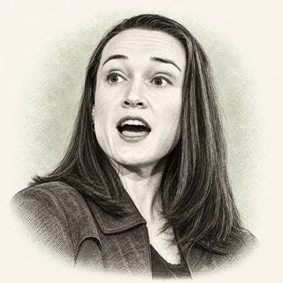 Leigh Marie Braswell ↗Investor | Kleiner Perkins · Partner | Safety, policy, capital & media |
| 95 | 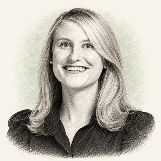 Grace Isford ↗Investor | Lux Capital · Partner | Safety, policy, capital & media |
| 96 | Simon Willison ↗ EngineerWriter | Independent development · Datasette creator and Django co-creator | Safety, policy, capital & media |
| 97 | Nathan Lambert ↗ ResearcherWriter | Interconnects / open post-training · Researcher and author; departed Ai2 in 2026 | Safety, policy, capital & media |
| 98 | 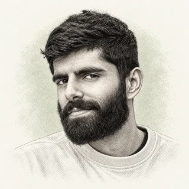 Dwarkesh Patel ↗Host | Dwarkesh Podcast · Host | Safety, policy, capital & media |
| 99 | Shawn "swyx" Wang ↗ HostFounder | AI Engineer / Latent Space · Co-founder and host | Safety, policy, capital & media |
| 100 | Sebastian Raschka ↗ EngineerEducator | Independent LLM research and education · LLM research engineer and author | Safety, policy, capital & media |
All 100 entries appear in the chapters below. Search filters this index; it does not hide the article’s evidence.
Twelve to start with.
What the 100 tell me.
Five patterns in this editorial selection, and the records I would follow into 2027.
| Section | People | Numbers |
|---|---|---|
| Frontier AI researchers | 21 | 1 to 21 |
| AI engineers building the infrastructure | 20 | 22 to 41 |
| AI founders and builders | 20 | 42 to 61 |
| Applied AI innovators, industry by industry | 22 | 62 to 83 |
| AI safety, policy, investing and the people who explain it | 17 | 84 to 100 |
1. Research careers can become financing stories.
Periodic Labs connects research careers with a documented $300 million founding round in September 2025. Factory's September 2026 announcement records $200 million raised at a $5 billion company valuation. These are company events; neither discloses a founder's private stake or personal wealth.
2. An open project and a company are different assets.
vLLM, SGLang and llama.cpp make the distinction visible. A repository can remain open while its maintainers build a paid business or join another organization. I follow what happens to access, licensing and governance alongside the financing, rather than treating a star count as revenue.
3. Growth figures need their denominators.
Fireworks reports annualized revenue run rate, Modal reports a run rate and growth since September, and Mercor's gross contractor billings need separating from revenue it retains. I compare a figure only after identifying its date, definition and source; these are not interchangeable measures of commercial success.
4. A technical record survives a changing job title.
Papers, code releases and institutional biographies let me follow researchers across labs without assigning every later employer claim the same confidence. Tri Dao's updated Princeton title differs from his older CV; Jason Wei's homepage names a later affiliation than his CV. The dates and provenance matter.
5. Physical results are a different test from software benchmarks.
Robotics, materials and drug-discovery entries need evidence beyond a model leaderboard. A robot must work in unfamiliar surroundings, a proposed material must be made and tested, and a designed molecule must survive development. Financing pays for those attempts; it does not prove their outcomes.
Frontier AI researchers
1. Alexander Wei
Research scientist, OpenAI · Frontier research
The Decoder's July 2025 report attributes to Alexander Wei's OpenAI team an experimental model scoring 35 of 42 points on the International Mathematical Olympiad, solving five of six problems. It describes a company-reported result, not an official medal awarded to the model.
Education: His own research profile records an A.B. and S.M. from Harvard in 2020 and a computer-science PhD from Berkeley in 2023, advised by Nika Haghtalab, Michael Jordan and Jacob Steinhardt.
The path: Wei won IOI gold in 2015 and a SODA 2019 Best Student Paper award. At Meta FAIR he co-authored CICERO, the Diplomacy-playing AI published in Science in 2022. He was at OpenAI by 2025 (start date not verified). On July 19, 2025, he and Noam Brown announced the IMO result, crediting general-purpose reinforcement learning and test-time compute scaling rather than task-specific methods.
Why I'm watching in 2027: The July 2025 IMO result raises a harder question for Wei's team: can other mathematicians inspect and verify the reasoning?
My read: A strong competition result would weaken as evidence if it failed to transfer to independently verifiable mathematics.
Sources: The Decoder · alexwei.org
2. Jerry Tworek
Founder; former OpenAI reasoning leader, Core Automation · Frontier research
Jerry Tworek's name appears beside overall reasoning leadership in OpenAI's o1 credits. After leaving OpenAI in January 2026, he launched Core Automation, shifting from a large lab to a startup focused on automating research.
Education: I could not establish his degree or graduation year from a primary education record.
The path: OpenAI's o1 contribution record names Tworek in overall reasoning leadership. Business Today's January 7, 2026 report describes his departure after seven years and his work on Codex and post-training. The Decoder's April launch report describes a new lab pursuing learning algorithms beyond pretraining and reinforcement learning.
Why I'm watching in 2027: The Decoder reported in May 2026 that Core Automation had raised $100 million at a $1 billion valuation and was targeting about $4 billion in another round. The latter was fundraising talk, not a confirmed closing. I am watching whether the lab turns that capital into repeatable improvements in model learning.
My read: An automated research lab still has to demonstrate a repeatable learning advantage outside its own promotional claims.
Sources: openai.com · Business Today · The Decoder: launch · The Decoder: valuation
3. Jason Wei
Researcher, Meta Superintelligence Labs · Frontier research
Jason Wei helped make chain-of-thought prompting a research result rather than a prompting anecdote; his current personal site places him at Meta Superintelligence Labs after Google Brain and OpenAI.
Education: Dartmouth's May 2023 alumni report identifies him as a 2020 graduate. I do not infer an additional degree from his research appointments.
The path: His CV dates the Google Brain residency from October 2020 to December 2021, followed by research-engineer and research-scientist roles. He joined OpenAI in February 2023. The publication record includes FLAN, chain-of-thought prompting, emergent abilities, SimpleQA in 2024 and BrowseComp in 2025. The older CV still says OpenAI; his updated homepage is the source for the later Meta affiliation.
Why I'm watching in 2027: Chain-of-thought research gives Jason Wei a specific 2027 challenge: show when a model's explanation reliably tracks how it reaches an answer. I would compare explanations against interventions, not just answer accuracy.
My read: A compelling reasoning benchmark would lose force if it rewarded persuasive explanations more than correct, reproducible answers.
Sources: jasonwei.net · home.dartmouth.edu · jasonwei.net
4. Hongyu Ren
Researcher; reported Meta hire, June 2025, Meta hiring report / OpenAI o1 record · Frontier research
Hongyu Ren appears among the foundational reasoning contributors in OpenAI's o1 credit record. Fortune reported in June 2025 that Meta hired him alongside three other OpenAI researchers.
Education: I could not retrieve a readable current primary education record during this review, so I do not publish the degree dates.
The path: The o1 record establishes a contribution to reasoning research, rather than sole authorship of a model. Fortune's June 28, 2025 report names Ren, Jiahui Yu, Shuchao Bi and Shengjia Zhao in the same hiring group. Those are dated records: the OpenAI credits describe earlier work and the hiring report describes a later move. Neither gives a verified chronology of internships or assigns him responsibility for every subsequent model.
Why I'm watching in 2027: Ren's o1 contribution and reported Meta move put reliable reasoning, rather than another recruitment headline, at the center of my 2027 thesis. A hiring headline is useful context, but reproducible evidence of better reasoning per dollar would be the stronger investment signal.
My read: For Hongyu Ren, I would look for evidence against this risk: confusing participation in a large team with individual responsibility for every result.
Sources: openai.com · Fortune
5. Sholto Douglas
Research discussed in a first-person interview, Anthropic / reinforcement learning · Frontier research
"RL in language models has finally worked," Sholto Douglas told Dwarkesh Patel in May 2025. He scales reinforcement learning at Anthropic, and the forecasts he put on the record come due in 2027.
Education: A University of Sydney report from August 2019 describes engineering honors studies, with a space-engineering major, alongside commerce. Australia's foreign-affairs department documents his 2018 New Colombo Plan scholarship and study at Tsinghua; neither record establishes his graduation date.
The path: His February 28, 2025 announcement says he joined Anthropic at the start of that month after Google DeepMind. The May 2025 Dwarkesh interview describes his work scaling reinforcement learning at Anthropic. I use those first-person records for the move and research focus, rather than assigning him sole credit for Claude's capabilities.
Why I'm watching in 2027: Douglas's May 2025 interview leaves dated predictions to compare with actual reinforcement-learning results in 2027. Next year those dated calls get graded in public.
My read: Anthropic / reinforcement learning's challenge is to avoid reward hacking or narrow training success presented as broad competence.
Sources: sydney.edu.au · X post · Dwarkesh Podcast
6. Joshua (Josh) Batson
Circuits project lead, 2025 research record, Anthropic interpretability · Frontier research
Josh Batson helped turn Claude's internal computations into experiments that people can inspect; Anthropic's March 2025 circuit-tracing study examines rhyme planning, factual recall and the limits of a model's own account of its reasoning.
Education: Gates Cambridge documents Yale mathematics studies and his move to Cambridge's Part III course. The Mathematics Genealogy record dates his MIT mathematics PhD to 2014, with Peter Ozsvath advising his work on knots and links.
The path: His mathematics record traces a move from knot theory into AI interpretability. Anthropic's On the Biology of a Large Language Model credits him as a core contributor and correspondence author on the March 2025 attribution-graph project. Graph construction, interventions and visualization are distinct responsibilities; that credit does not mean one researcher explained an entire model. His Anthropic start date remains unestablished.
Why I'm watching in 2027: Anthropic's circuit-tracing experiments give Batson's work a practical next test: can the explanations guide interventions that consistently change model behavior?
My read: Joshua (Josh) Batson's case depends on avoiding the opposite outcome: explanations remain descriptive without predicting or preventing failures on new inputs.
Sources: Gates Cambridge · Transformer Circuits
7. Julian Schrittwieser
Contributor describing the project’s published work, AlphaProof research · Frontier research
Julian Schrittwieser's research path runs from Go-playing systems to formal mathematics. His own AlphaProof account ties the project to work at Google DeepMind from early 2022 to July 2024.
Education: I could not verify his degrees.
The path: MIT Technology Review's profile describes his engineering work on AlphaGo and AlphaGo Zero. His November 2025 AlphaProof account says the system discovered Lean proofs for the 2024 International Mathematical Olympiad at silver-medal performance, with a paper published in Nature. It explicitly dates the work to his earlier Google DeepMind tenure. I retain that chronology rather than treating a later publication date as proof of a current employer.
Why I'm watching in 2027: AlphaProof's formal-mathematics work makes independently checkable proofs the result I want to see next from Schrittwieser's research. I am watching whether reinforcement learning transfers from tightly specified games and formal proofs to tasks with ambiguous goals, incomplete feedback and a real cost when an agent makes a mistake.
My read: Julian Schrittwieser: the warning sign is success confined to problems already shaped for a formal system.
Sources: MIT Technology Review · julian.ac
8. Neel Nanda
Mechanistic interpretability team lead, Google DeepMind · Frontier research
Neel Nanda's own biography says he runs Google DeepMind's mechanistic interpretability team and mentors researchers through MATS. His route into that work began in pure mathematics and included quant-finance internships.
Education: His own biography says he studied pure mathematics at Cambridge and graduated in 2020, before a postgraduate year of AI safety internships; I do not infer an additional degree from that year.
The path: The same biography records internships at Jane Street and Jump Trading, followed by AI safety work at the Future of Humanity Institute, DeepMind and CHAI. He then did independent interpretability research and worked at Anthropic under Chris Olah before leading the Google DeepMind team. He describes the team's job as reverse engineering the algorithms and structures learned by neural networks; that is a concrete research mandate rather than a claim that every model behavior is already understood.
Why I'm watching in 2027: Nanda's interpretability work at DeepMind needs to show which findings help researchers diagnose or change a model beyond a selected example. His mentoring work also makes the supply of trained researchers part of the story; a technique that only its original authors can operate has a limited auditing market.
My read: For Neel Nanda, I would look for evidence against this risk: explanations that are informative to researchers but too fragile or costly for operational use.
Sources: neelnanda.io
9. Jack Parker-Holder
Research scientist, personal-page record, Google DeepMind · Frontier research
Jack Parker-Holder works on Genie, Google DeepMind's world-model research. TechCrunch's August 2025 report attributes 720p generation at 24 frames per second to Genie 3, then a research preview rather than a generally available product.
Education: His academic profile lists an Exeter mathematics BSc from 2009 to 2012, Columbia's quantitative-methods master's studies from 2016 to 2018, and Oxford DPhil research beginning in 2019; it does not establish a completed DPhil award.
The path: From 2012 to 2019 he worked at J.P. Morgan in New York as a quantitative researcher and ETF trader, rising to VP, Quantitative Research. Then came Oxford and Google DeepMind's Open-Endedness team. His record includes PB2 (now in Ray Tune), ACCEL (ICML 2022) and AdA (ICML 2023 oral), then Genie (Feb 2024) and Genie 3, followed by Project Genie and a Street View integration announced at Google I/O. He is also an Honorary Lecturer at UCL DARK.
Why I'm watching in 2027: Genie 3's research preview makes world-model consistency a concrete 2027 test for Parker-Holder, beyond the quality of a short demonstration. His 2026 interview with Heise discusses Street View integration and physical-world uses. The financial question is whether useful training scenarios can be produced more cheaply without sacrificing the accuracy needed for transfer to real environments.
My read: Google DeepMind's challenge is to avoid visual plausibility mistaken for physical accuracy or reliable transfer.
Sources: TechCrunch · jparkerholder.github.io · heise
10. Lilian Weng
Research writer; reported OpenAI return, July 2026, Lil'Log / reported OpenAI role · Frontier research
Lilian Weng's Lil'Log turns technical research into readable notes on reinforcement learning, hallucinations and model behavior. July 2026 reporting says she left Thinking Machines Lab and returned to OpenAI to work on recursive self-improvement.
Education: An Ifanr profile reports Peking University studies beginning in 2005 and subsequent doctoral study at Indiana University Bloomington. I have not confirmed the degree award year from a university record.
The path: The July departure reporting describes earlier OpenAI robotics and safety work, followed by co-founding Thinking Machines Lab. I treat that as an attributed career account, not a primary employment register. Her own blog dates its learning notes to 2017 and provides a direct record of her writing. Research on reward hacking, hallucinations and test-time compute connects her public explanations to practical questions about model reliability.
Why I'm watching in 2027: Weng's reported return to OpenAI shifts my attention to the artifacts that emerge from recursive self-improvement research. Faster research cycles would matter economically, but a claim of self-improvement needs a clear account of what was automated, what humans contributed and whether the gains replicate outside the team's own evaluation.
My read: Weng would lose my confidence over a broad self-improvement claim with no clear baseline or independently checkable outcome.
Sources: lilianweng.github.io · American Bazaar · ifanr
11. Liam Fedus
Co-founder, founding announcement, Periodic Labs · Frontier research
Liam Fedus moved from language-model research to a company trying to automate scientific experiments. Andreessen Horowitz's September 2025 announcement describes Periodic Labs as a combination of AI models and physical laboratories.
Education: I have not established his degree award dates from primary university records, so I leave those dates out.
The path: OpenAI's o1 credits name Fedus in reasoning-research leadership. The Periodic Labs founding announcement identifies the subsequent company and its plan to connect AI with physical experimentation. These records document two distinct stages: improving language-model systems, then building infrastructure that can generate experimental data instead of relying only on existing text. They do not establish the full chronology of earlier employment or a personal ownership percentage.
Why I'm watching in 2027: Periodic Labs' combination of models and physical laboratories makes repeatable experimental results the milestone to follow in 2027. I am watching whether automated experimentation produces reproducible materials results. Later fundraising discussions are not a closed round, and company capital raised is not Fedus's personal wealth.
My read: Liam Fedus's case depends on avoiding the opposite outcome: autonomous experiments fail to produce materials with independently demonstrated practical value.
Sources: a16z.com · openai.com
12. Misha Laskin
Co-founder and CEO, NVIDIA announcement, Reflection · Frontier research
Reflection's October 5, 2026 announcement describes Beam as a mixture-of-experts model with 501 billion total and 23 billion active parameters. Those are company-reported specifications, not an independent performance audit.
Education: His personal research biography records a theoretical-physics PhD at the University of Chicago and reinforcement-learning postdoctoral work at Berkeley; the biography does not give a graduation year.
The path: His personal biography records theoretical-physics doctoral work, a Berkeley postdoc and a Y Combinator-backed startup. NVIDIA's March 2026 coalition announcement identifies him as Reflection's co-founder and CEO. The move connects reinforcement-learning research with a company building frontier models; it does not prove that announced benchmarks translate into dependable production workloads.
Why I'm watching in 2027: Beam's October 2026 release gives Reflection a model that outside developers can examine, making reproducibility the next test for Laskin's team. The model announcement describes a planned weights release later in October; announcing an open-weight model and delivering the artifact are separate milestones.
My read: Misha Laskin's case depends on avoiding the opposite outcome: developers cannot reproduce the announced model's results using the promised released weights.
Sources: reflection.ai · mishalaskin.com · nvidianews.nvidia.com
13. Luo Fuli
MiMo team lead, September 2026 report, Xiaomi MiMo · Frontier research
TechNode's September 2026 report says Xiaomi promoted Luo Fuli, its MiMo team lead, to level 22. The report attributes the rank and September 22 internal announcement to LatePost, rather than a public company filing.
Education: A Jiemian profile reports studies at Beijing Normal University and Peking University. I have not established degree award dates from university records.
The path: The MiMo-V2-Flash technical report, submitted in January 2026, includes Fuli Luo among the Xiaomi LLM-Core Team authors. That gives a research artifact to inspect alongside the later leadership report. I distinguish a named contribution from sole authorship and leave out uncertain joining dates and private compensation stories.
Why I'm watching in 2027: Luo's reported MiMo promotion puts the model team's releases, deployment costs and external evaluations ahead of the internal rank in my 2027 assessment. The technical report and deployed products are stronger tests than a promotion headline: an important rank is an organizational signal, but the business case depends on quality, latency and the cost of serving real users.
My read: Xiaomi MiMo's challenge is to avoid architectural efficiency claimed without measuring the full serving pipeline.
14. Yao Shunyu (Vinces Yao)
Chief AI scientist, December 2025 report, Tencent · Frontier research
Yahoo Finance's December 17, 2025 report identifies Yao Shunyu as Tencent's chief AI scientist under the CEO's office, reporting to president Martin Lau. That is a dated reporting record, not a continuously updated employment register.
Education: I could not verify his complete degree chronology against university award records.
The path: His Reflexion research paper establishes a contribution to agents that use verbal feedback. The later Tencent report says he came from OpenAI and was also assigned leadership of LLM development and AI infrastructure. The distinction matters: a research paper shows a method, while an organizational appointment creates responsibility for training and inference platforms.
Why I'm watching in 2027: The Tencent appointment puts Yao's feedback-based agent research alongside responsibility for large-scale deployment. At a large consumer technology company, the commercial test also includes deployment cost and consistency across user contexts. A stronger model benchmark alone does not show that feedback has become reliable memory in a working product.
My read: Yao) would lose my confidence over an agent carrying forward a mistaken explanation as if it were verified experience.
Sources: Yahoo Finance · arxiv.org
15. Lin Junyang (Justin Lin)
Founder, August 2026 announcement, Pragmatik Labs; former Qwen lead · Frontier research
The Standard's August 2026 report describes former Qwen leader Lin Junyang announcing Pragmatik Labs, five months after his departure from Alibaba.
Education: I could not verify his degree award year from a university record.
The path: The Qwen2 technical report includes Junyang Lin in the team behind the open-weight model family. His later startup announcement marks a move from a large technology company to a venture pursuing agents across digital and physical worlds. The Standard names HSG and Gaorong as co-leading the funding and Tencent among the supporters. Paper authorship and a startup announcement establish different kinds of evidence; neither establishes personal wealth.
Why I'm watching in 2027: The Standard reports funding worth hundreds of millions of dollars, including $100 million each from HSG and Gaorong and $20 million from Tencent. I attribute those amounts to the report rather than an audited cap table. I am watching whether the new venture releases models or products that outside developers can evaluate.
My read: Lin Junyang (Justin Lin): the warning sign is a changing employer or fundraising story substituting for evidence about the product.
Sources: The Standard · arxiv.org
16. Yang Zhilin
Kimi K2 technical-report co-author, Kimi research · Frontier research
Yang Zhilin's research record connects Transformer-XL and XLNet to Moonshot's Kimi models; I am following the work that can be inspected, rather than treating an aggregator's IPO headline as a completed transaction.
Education: Carnegie Mellon's alumni record identifies his 2019 PhD as Language and Information Technology.
The path: CMU's Language Technologies Institute records his doctorate in 2019. The Kimi K2 technical report provides an inspectable model artifact from the company associated with his later work. That connection between research and commercial models is the useful thread here.
Why I'm watching in 2027: Kimi K2 provides a technical starting point for testing Moonshot's reasoning and long-context claims against actual cost and reliability. An external test should identify the model version, context length and evaluation date, so a later release cannot silently inherit the performance claims of an earlier one.
My read: Yang Zhilin's case depends on avoiding the opposite outcome: commercial claims move faster than reproducible models and disclosed operating evidence.
Sources: lti.cs.cmu.edu · arxiv.org
17. Chelsea Finn
Assistant professor and co-founder, Stanford / Physical Intelligence · Frontier research
Chelsea Finn connects meta-learning research with general-purpose robotics. Her Berkeley dissertation record is titled Learning to Learn with Gradients; her Stanford biography identifies her as a Physical Intelligence co-founder.
Education: Her Stanford research biography records an MIT bachelor's degree in electrical engineering and computer science and a Berkeley computer-science PhD; Berkeley's dissertation record is dated August 2018.
The path: Her Stanford biography identifies an assistant professorship in computer science and electrical engineering and describes the IRIS lab's work on intelligence through robotic interaction. Her Berkeley dissertation, dated August 2018, documents the earlier meta-learning research. Together, those records trace the connection from learning algorithms to systems that must act in physical environments, where training data and evaluation are harder to collect than ordinary text.
Why I'm watching in 2027: Physical Intelligence brings Finn's learning-to-learn research to a harder setting: robots that must work outside their training demonstrations. Demonstrations should show success rates, failures and the labor needed to prepare a task.
My read: Stanford / Physical Intelligence's challenge is to avoid a successful video that leaves setup labor and failures out of view.
Sources: Berkeley EECS thesis · Stanford AI Lab
18. Sherry Yang
Assistant professor and staff research scientist, NYU / Google DeepMind · Frontier research
Sherry Yang's academic homepage records an ICLR 2024 Outstanding Paper Award for UniSim, Learning Interactive Real-World Simulators. Her work links world models with robot policies and AI for science.
Education: Her personal academic biography records bachelor's and master's degrees at MIT, a Berkeley PhD advised by Pieter Abbeel, and Stanford postdoctoral work with Percy Liang; not all award years are established.
The path: Her academic homepage describes research in world models, agents, robotics and AI for science, following a Stanford postdoc. Its news record includes CrystalReasoner in May 2026. Harvard Kempner's February 2026 event independently identifies her as an NYU assistant professor and Google DeepMind research scientist. I use those records for the affiliations rather than extrapolating employment dates from an aggregator.
Why I'm watching in 2027: UniSim's interactive simulation work makes transfer to real experiments the next test for Yang's world models. Her research connects simulation to robotics and scientific discovery; the valuable test is whether a policy trained in that cheaper environment works under the physical or scientific constraints of its intended application.
My read: Yang would lose my confidence over a simulated result whose assumptions do not survive contact with the intended application.
Sources: sherryy.github.io · Kempner Institute
19. Levent Alpöge
Researcher, described as an Anthropic employee in September 2026, Anthropic, dated attribution · Frontier research
Levent Alpöge and Tristan Buckmaster's AI-assisted mathematics work became part of a September 2026 dispute over attribution. OpenAI's account acknowledges the priority of their forced-Euler work; that acknowledgment is separate from independent acceptance of a proof.
Education: I could not verify his degrees or scholarship dates from primary award records.
The path: The September 2026 university account describes a dispute over related fluid-equation results. OpenAI's original post identifies Alpöge as an Anthropic employee and acknowledges work with Buckmaster. I distinguish each party's account, a formal checking artifact and independent mathematical acceptance. Those records do not justify attributing every result in the dispute to one person or saying that a prize was awarded.
Why I'm watching in 2027: OpenAI's September 2026 account identifies Alpoge as an Anthropic employee and acknowledges the earlier Alpoge-Buckmaster forced-Euler result. That primary attribution is stronger than an inferred employer from a headline, but it does not settle competing claims about credit or certify an unpublished mathematical result.
My read: Levent Alpöge's case depends on avoiding the opposite outcome: the claimed results cannot survive independent mathematical review and reproducible checking.
Sources: OpenAI · NYU Shanghai RITS
20. Sara Hooker
AI researcher, Adaption · Frontier research
Sara Hooker's essay "The Hardware Lottery" argued that available hardware quietly decides which research ideas win. Her new company, Adaption, is a bet against the bigger-static-model paradigm.
Education: Her current personal biography explicitly records a computer-science PhD at Mila, supervised by Hugo Larochelle and Aaron Courville. Her earlier first-person account describes an economics undergraduate background; the dated change in her biography matters, so I do not repeat an older assumption that she has no PhD.
The path: Hooker's earlier work includes Delta Analytics and Google Brain; her first-person account describes a route from economics to machine learning. At Cohere she led Cohere For AI, later Cohere Labs, and worked on multilingual research including Aya. Her current personal site identifies Adaption as her new venture and describes the earlier Cohere vice-president role. The Hardware Lottery, posted in 2020, supplies the intellectual thread: available hardware can favor some research directions over others.
Why I'm watching in 2027: Her current biography describes Adaption's focus on efficient systems that continually learn. I am watching whether that approach maintains quality as data changes, without pushing unreported costs into retraining or evaluation.
My read: For Sara Hooker, I would look for evidence against this risk: an efficiency claim that works only after shifting unreported costs elsewhere.
Sources: sarahooker.me
21. Joelle Pineau
Chief AI Officer, Cohere · Frontier research
Cohere's August 2025 announcement appoints Joelle Pineau chief AI officer after leading Meta's FAIR organization. Her academic and industry path makes reproducibility part of the enterprise-AI question.
Education: Her McGill biography records a Waterloo engineering BASc and Carnegie Mellon robotics MSc and PhD. I omit precise award years because that readable record does not state them.
The path: Her McGill biography describes planning under uncertainty and applications in robotics, healthcare and conversational agents. It records FAIR leadership from 2017 to 2025 and a current part-time leave from McGill. Cohere's later appointment announcement establishes the new company role. I keep those dated records separate instead of treating an older university page as a full current employment register.
Why I'm watching in 2027: Cohere's August 2025 chief-AI-officer announcement puts Pineau's research leadership alongside enterprise and sovereign deployment economics. That company structure is examined separately in who owns Cohere; a pending transaction is not proof of completed ownership or of an individual's stake.
My read: Cohere's challenge is to avoid product announcements without evidence of renewal or improved workflow outcomes.
Sources: cohere.com · cs.mcgill.ca · who owns Cohere
AI engineers building the infrastructure
22. Woosuk Kwon
Co-founder named in launch record, Inferact / vLLM · Infrastructure
Woosuk Kwon co-created vLLM, whose open repository exposes the inference engine developers can test. Commercializing that work through Inferact creates a second question: what customers will pay for around an open project.
Education: His research biographies describe Seoul National University studies and doctoral research at Berkeley. I have not confirmed a completed Berkeley PhD award, and do not infer one from the project or company launch.
The path: The vLLM repository provides the code and project record behind his inference work, including PagedAttention. SiliconANGLE's January 22, 2026 report describes the subsequent Inferact launch.
Why I'm watching in 2027: vLLM gives Kwon an inspectable technical foundation; Inferact must show why customers will pay for the surrounding service. Next year it must sell a paid product on the default open inference engine without losing the community that built it. I would compare support costs, latency under load and paid retention with the same engine operated independently.
My read: Kwon would lose my confidence over commercial adoption growing while community stewardship or portability weakens.
Sources: vLLM on GitHub · SiliconANGLE
23. Ying Sheng
Co-founder and CEO, 2026 event biography, RadixArk / SGLang · Infrastructure
Ying Sheng's SGLang work connects an open inference engine to RadixArk, a company commercializing AI infrastructure. The SGLang repository offers a direct technical record to inspect.
Education: I have not confirmed the degree award dates against university records, so I do not publish an aggregator's education chronology.
The path: TechCrunch's January 2026 report connects the SGLang spinout to Sheng's earlier inference work. The repository and paper record show the technical project; the financing report describes the later business.
Why I'm watching in 2027: SGLang's open engine makes RadixArk's support, reliability and production economics the next things to examine in Sheng's work. I am watching whether hosted infrastructure wins paid customers while preserving the portability that attracts developers to an open engine. Financing sets investor expectations; renewals test the operational value. My comparison would hold the model, hardware and request mix constant before crediting the serving engine for a cost improvement.
My read: Ying Sheng: the warning sign is comparisons that change hardware, batch size or quality targets between systems.
Sources: SGLang on GitHub · TechCrunch · radixark.com
24. Georgi Gerganov
Creator and project steward, ggml / llama.cpp · Infrastructure
Georgi Gerganov's llama.cpp is a direct route to running language models locally. Its economics differ from a cloud API: the user supplies the device and trades hardware constraints against privacy, latency and recurring cost.
Education: I could not confirm the medical-physics degree against an original university record.
The path: Hugging Face's February 20, 2026 announcement says Gerganov and the ggml team joined it to support local AI. It says the team retains technical autonomy and dedicates its work to llama.cpp. The release does not disclose transaction terms, so I do not estimate a deal price or personal proceeds. The public repository makes the supported hardware and implementation visible to developers.
Why I'm watching in 2027: llama.cpp makes local inference testable on the user's own device; Gerganov's next challenge is preserving that usability as models change. I am watching whether that reduces the effort required to run new open models on ordinary devices. A promised near-single-click conversion path is a roadmap, while a working release and reproducible performance are evidence that the goal has been delivered.
My read: For Georgi Gerganov, I would look for evidence against this risk: a change in sponsorship that gradually makes users dependent on a closed service.
Sources: llama.cpp on GitHub · Hugging Face blog
25. Tri Dao
Chief scientist; visiting research scholar, Together AI; Princeton · Infrastructure
FlashAttention tackles the GPU memory traffic that makes attention expensive; Tri Dao's research record also includes Mamba, a different architectural bet on how sequence models should work.
Education: His CV records a Stanford mathematics BS and computer-science MS in 2016, a statistics MS in 2019 and a computer-science PhD completed in June 2023, advised by Christopher Re and Stefano Ermon.
The path: During his doctorate he released FlashAttention in 2022 and FlashAttention-2 in 2023. His CV dates the Together AI chief-scientist role to July 2023 and lists Mamba, co-authored with Albert Gu, followed by Mamba-2 and FlashAttention-3. The same CV lists Mamba-3 and FlashAttention-4 in 2026. For his university title I use Princeton's current page, which says Visiting Research Scholar and previously Assistant Professor; the older CV still uses the faculty title.
Why I'm watching in 2027: FlashAttention and Mamba put Dao's work on two routes to lower inference costs, both of which need matched hardware comparisons.
My read: Tri Dao's case depends on avoiding the opposite outcome: faster published kernels do not improve real workloads once memory, quality and deployment costs are included.
Sources: tridao.me · Princeton CS profile
26. Daniel Han
Founder, Unsloth · Infrastructure
Daniel Han's Y Combinator biography credits him with finding and fixing more than 20 bugs in open models. That is a founder's attributed account, not an independent audit of every fix.
Education: I could not verify his education.
The path: The same YC record identifies NVIDIA algorithm work, the Hyperlearn package, co-founder Michael Han, a 2023 founding date and the Summer 2024 batch. Unsloth's repository supplies an inspectable record of its fine-tuning and reinforcement-learning tools.
Why I'm watching in 2027: Unsloth's model fixes give Han a testable proposition: lower training costs without hidden losses in correctness or reproducibility. The economic benefit needs to survive a matched comparison: the same model, data, quality target and hardware. Downloads and repository stars show interest, but are not a measure of customer revenue or dependable savings. A useful benchmark would publish the model, memory requirement and resulting quality alongside the reported training speed.
My read: Han would lose my confidence over savings achieved by changing the task or accepting an undisclosed quality loss.
Sources: Y Combinator · Unsloth on GitHub
27. Omar Khattab
Assistant professor, MIT / DSPy · Infrastructure
Omar Khattab's DSPy repository treats language-model pipelines as programs that can be optimized against examples. That shifts the problem from writing one clever prompt to maintaining a repeatable system.
Education: Carnegie Mellon's 2019 alumni account identifies him as a computer-science graduate headed to Stanford for further study. I do not infer a later doctorate award date from that announcement.
The path: The MIT profile identifies his work in AI systems, while DSPy's code provides the implementation developers can use and test. The research connects retrieval and language models with a programming approach to compound systems. I do not infer adoption across all enterprise stacks from repository popularity or assign sole credit for a project with multiple contributors.
Why I'm watching in 2027: DSPy's programmatic approach makes repeatable optimization, rather than a one-off prompt improvement, the result to follow from Khattab's work. With his own MIT lab now running, he is positioned to define how compound AI systems get compiled and optimized rather than hand-prompted.
My read: Omar Khattab: the warning sign is an optimized program that overfits its evaluation examples.
Sources: DSPy on GitHub · qatar.cmu.edu
28. Lysandre Debut
Co-author of the v5 announcement, Hugging Face Transformers · Infrastructure
Lysandre Debut co-authored Hugging Face's December 2025 Transformers v5 announcement. Its model definitions sit upstream of tools for training and inference, making compatibility work commercially important.
Education: I could not verify his education.
The path: The PyTorch Foundation biography describes his open-source leadership at Hugging Face. The v5 release post names him among its authors and reports over 400 supported model architectures, up from 40 at the earlier v4 release. Those are company-reported ecosystem figures. The December 1 post announced a release candidate, v5.0.0rc-0, rather than establishing the date of every later stable release. The post distinguishes model definitions from the downstream runtime.
Why I'm watching in 2027: Transformers v5 makes compatibility across downstream tools a concrete test of Debut's infrastructure work. Hugging Face's February 2026 ggml announcement describes a closer path from Transformers definitions to llama.cpp; it is a roadmap that still needs working integrations.
My read: For Lysandre Debut, I would look for evidence against this risk: rapid integration that leaves incompatible defaults or poorly tested implementations.
Sources: Transformers v5 blog · PyTorch Foundation · huggingface.co
29. Erik Bernhardsson
Founder and CEO, Modal · Infrastructure
Erik Bernhardsson's own biography traces Annoy and Spotify recommendation systems to his later infrastructure company, Modal. That is a useful career connection between building machine-learning systems and selling the compute they need.
Education: His own biography records a physics MSc from KTH, an IOI gold medal and two ACM-ICPC world-final appearances; it does not state the degree award year.
The path: After a six-month internship at Google Zurich, he spent about six years at Spotify, first in Stockholm analytics, then building and running the NYC machine learning team. There he built the first version of its music recommendations, including Related Artists, Radio and Discover Weekly, and open-sourced Luigi (10k+ stars) and Annoy. From Feb 2015 to Jan 2021 he was CTO of Better.com, leading a roughly 300-person tech team, according to his biography. He founded Modal in 2021 to build a container and GPU runtime.
Why I'm watching in 2027: Modal's May 21, 2026 announcement confirms a $355 million Series C at a $4.65 billion post-money valuation, led by General Catalyst and Redpoint. It reports annualized revenue exceeding $300 million and fivefold growth since September; those are company claims, not audited full-year revenue. I have not established a closed subsequent round after that announcement.
My read: Erik Bernhardsson's case depends on avoiding the opposite outcome: usage growth fails to translate into durable margins after paying for compute.
Sources: erikbern.com · modal.com
30. Lin Qiao
Co-founder and CEO, Fireworks · Infrastructure
Lin Qiao ran the Meta organization behind PyTorch, the framework most of her customers' models were trained in. Now she sells them the inference.
Education: In her TWIML interview biography, Qiao records bachelor's and master's degrees in computer science from Fudan and a computer-science PhD from UC Santa Barbara; degree years are not established by that record.
The path: Her TWIML biography describes earlier work at IBM and LinkedIn and leadership of Meta's AI frameworks organization. The later Fireworks financing announcement documents the company she co-founded. The progression connects model-development infrastructure with the later problem of serving specialized models to customers.
Why I'm watching in 2027: Qiao's move from PyTorch infrastructure to inference turns the question toward reliable customer workloads at a sustainable serving cost. It also reports an annualized revenue run rate above $1 billion and more than 40 trillion daily tokens; those operating figures are company-reported, not audited annual revenue.
My read: Qiao would lose my confidence over revenue growth mistaken for high margins or cash generation.
Sources: twimlai.com · fireworks.ai
31. Tuhin Srivastava
CEO and co-founder, Baseten · Infrastructure
Baseten's financing moved from a $5 billion valuation in January 2026 to $13 billion in June; the later round is no longer merely reported talks, because the company published its own announcement.
Education: I could not verify his education.
The path: Tuhin Srivastava co-founded the inference company with Amir Haghighat, Phil Howes and Pankaj Gupta. Baseten's January 23, 2026 Series E statement records $300 million raised at $5 billion and names IVP and CapitalG as leads. Its June announcement is signed by the four founders and names customers including Cursor, Notion, Harvey and OpenEvidence. His exact early-career banking dates remain unverified.
Why I'm watching in 2027: The June 22, 2026 Series F announcement records $1.5 billion at a $13 billion valuation, led by Altimeter, Conviction and Spark, with Sands and Wellington co-leading. Baseten reports twentyfold revenue growth and fortyfold inference-volume growth over the previous year, but does not disclose an absolute revenue figure there. I am following whether specialization protects its economics as inference competitors expand.
My read: Tuhin Srivastava's case depends on avoiding the opposite outcome: growth in inference volume masks falling margins or customer concentration.
Sources: baseten.co · baseten.co
32. Gorkem Yurtseven
Co-founder, fal · Infrastructure
Gorkem Yurtseven co-founded fal, an infrastructure platform for generative image, video and audio models. Its company history dates the founding with Burkay Gur to 2021.
Education: I could not verify his education.
The path: The company connects its origin to the founders' earlier work at Amazon and Coinbase. Yahoo Finance's December 2025 funding report describes Yurtseven as an ex-Amazon developer and reports fal's expansion in media-model hosting. I use co-founder as his title because the accessible profiles disagree about the executive title.
Why I'm watching in 2027: The December report records $140 million in new funding at a $4.5 billion valuation, led by Sequoia. It also attributes revenue above $200 million as of October to Bloomberg reporting, without establishing a comparable annual recurring-revenue measure. I am watching whether a specialist serving layer retains customers as model providers change their prices and distribution.
My read: For Gorkem Yurtseven, I would look for evidence against this risk: model-provider dependence or volatile inference costs eroding the platform’s value.
Sources: fal.ai · Yahoo Finance
33. Jeffrey Morgan
Founder, YC record, Ollama · Infrastructure
Jeffrey Morgan co-founded Ollama with Michael Chiang, according to Y Combinator's company record. The tool makes running open models locally easier, turning installation and distribution into part of the AI business story.
Education: TechCrunch (2015) described the Kitematic founders as college students near Waterloo, but I could not verify his school, degree or year.
The path: TechCrunch's March 2015 account describes the earlier Kitematic acquisition by Docker. YC's later Ollama record identifies Morgan and Chiang as founders. The progression connects two developer tools that reduce setup complexity, but the acquisition story does not establish the price, Morgan's proceeds or a full intervening employment chronology.
Why I'm watching in 2027: Ollama's local-model workflow makes installation, updating and dependable everyday use the next tests for Morgan's team. I am watching whether that distribution supports a sustainable local and hybrid-inference business. A user count does not by itself establish paid customers, revenue or margins.
My read: Ollama's challenge is to avoid adoption figures that do not translate into supported, sustainable use.
Sources: ycombinator.com · TechCrunch (2015) · Pulse 2.0
34. Simon Hørup Eskildsen
Co-founder, turbopuffer · Infrastructure
Simon Hørup Eskildsen's own career record dates turbopuffer to 2023 after eight years working on Shopify infrastructure. Its object-storage approach makes retrieval cost the central question.
Education: I could not verify his formal education. He competed in the International Olympiad in Informatics.
The path: His biography dates Shopify work to 2013 to 2021, consulting with companies including Replicate and Readwise to 2021 to 2023, and turbopuffer's founding to 2023. He describes infrastructure scaling from 1,000 to one million requests per second and maintains the napkin-math project. Those are attributed first-person career records.
Why I'm watching in 2027: turbopuffer's object-storage design puts retrieval latency and total operating cost at the center of Eskildsen's 2027 case. A cheaper backend matters to an AI product only if it can return the right material within the product's response budget. Capacity, paid usage and customer outcomes are more useful here than an unsourced growth multiple.
My read: Eskildsen would lose my confidence over cheap storage offset by unpredictable retrieval or stale context.
Sources: sirupsen.com
35. Ankur Goyal
Founder, first-person company announcement, Braintrust · Infrastructure
Ankur Goyal's Braintrust funding announcement connects his earlier work at Impira and Figma to a company selling evaluation and observability tools for production AI.
Education: I could not confirm the degree or withdrawal chronology from a primary education record.
The path: In the February 2026 post, Goyal says he built internal evaluation tools at both Impira and Figma and founded Braintrust after seeing the same need elsewhere. That first-person explanation establishes the product's origin without requiring an aggregator's precise promotion or employment dates. The company describes a shift from experiments to agents embedded in engineering workflows, where tracing failures becomes an operational requirement.
Why I'm watching in 2027: Braintrust's funding announcement connects Goyal's evaluation tools with a commercial test: catching failures that customers actually encounter. It does not establish the post-money valuation in the readable text I reviewed, so I omit that figure. I am watching whether evaluations detect failures customers actually encounter and help teams improve them, rather than merely add another dashboard.
My read: Ankur Goyal: the warning sign is a dashboard measuring convenient proxies instead of the failures customers experience.
Sources: braintrust.dev
36. Anastasios Angelopoulos
Co-founder and CEO, Arena · Infrastructure
Anastasios Angelopoulos's own biography identifies him as Arena's co-founder and CEO and describes a research focus on reliable AI. That puts a researcher in charge of a business whose central asset is trust in evaluation.
Education: His personal academic biography records undergraduate electrical engineering at Stanford, an EECS PhD at Berkeley advised by Michael Jordan and Jitendra Malik, and postdoctoral work with Ion Stoica; the biography does not establish the award years.
The path: His biography documents a Berkeley postdoc after doctoral work, and publications on conformal prediction and prediction-powered inference. The later Arena role connects those reliability questions to public model comparisons. I avoid treating a leaderboard position as a universal verdict: rankings depend on the tasks, users and comparison method. The record also does not make one founder solely responsible for the platform's research or every ranked outcome.
Why I'm watching in 2027: Arena's reported January 2026 financing makes commercial expansion and the independence of its comparisons a joint test for Angelopoulos. January 2026 reporting describes a $150 million Series A at a $1.7 billion post-money valuation. I attribute that price to the funding report and leave out unverified operating run rates.
My read: For Anastasios Angelopoulos, I would look for evidence against this risk: a single leaderboard position treated as proof that a model is best for all users.
Sources: angelopoulos.ai · Bridge MENA
37. David Soria Parra
Lead maintainer, Model Context Protocol · Infrastructure
David Soria Parra is a lead maintainer in the Model Context Protocol's October 2026 maintainer record. The protocol makes tool and data connections a shared infrastructure problem.
Education: I could not confirm his university or degree from an original education record.
The path: The AI Engineer biography connects his PHP and developer-tooling background to MCP. The protocol's own maintainer list names both Soria Parra and Den Delimarsky as lead maintainers and identifies Justin Spahr-Summers as co-inventor and emeritus lead maintainer. I retain the team attribution and omit an unverified full employment chronology.
Why I'm watching in 2027: The October 2026 MCP maintainer record puts Soria Parra close to the practical question of dependable tool and data connections. Support in a client is not enough if a connection grants excessive permissions or behaves differently across implementations. The economic benefit is easier integration with less bespoke maintenance; that benefit needs interoperable releases rather than a repository popularity count.
My read: Model Context Protocol's challenge is to avoid broad support claimed despite incompatible behavior or unsafe authorization.
Sources: github.com · AI Engineer
38. Gavin Uberti
Co-founder and CEO, Etched · Infrastructure
Etched is a concentrated bet on transformer-specific inference hardware; its own funding announcement records $700 million at a $21 billion valuation in August 2026.
Education: Etched's team page describes Uberti as a Harvard Thiel Fellow and Math 55 alumnus. It does not establish a completed degree, so I do not infer one.
The path: Etched's August 18, 2026 statement says it shipped its first rack to Jane Street and raised $700 million at a $21 billion valuation, led by Jane Street after testing the hardware. Its team page identifies Uberti as co-founder and CEO. I treat the shipment and customer quotation as company-reported progress, not an independent benchmark showing a universal GPU-replacement ratio.
Why I'm watching in 2027: The company identifies Jane Street as lead investor in its $700 million round at $21 billion. I am following delivered throughput, power consumption and customer economics rather than treating a quoted GPU-replacement ratio as a verified benchmark. Higher October valuation offers in reporting remain a separate, unconfirmed transaction lead; none is evidence of Uberti's personal wealth.
My read: Gavin Uberti's case depends on avoiding the opposite outcome: changing model architectures or real deployment costs erase the advantage of transformer-specific silicon.
Sources: etched.com · etched.com
39. Reiner Pope
Co-founder and CEO, MatX · Infrastructure
Reiner Pope's personal biography identifies him as MatX's co-founder and CEO, following work at Google on language-model hardware and software efficiency. His startup turns that systems experience into a chip business.
Education: I could not verify his degree or graduation year from a university record.
The path: Pope describes earlier Google work on compilers and chip architecture as well as model efficiency. His personal site also lists technical writing on matrix multiplication, hashing and sorting, with dated posts in 2025. Those are inspectable technical contributions, rather than proof that a commercial chip meets its performance targets. I do not infer precise employment dates or a completed delivery milestone from that biography.
Why I'm watching in 2027: MatX puts Pope on the other side of the hardware purchase: his team must deliver a customer system, not just optimize an existing one. Measured throughput, power consumption, compiler support and deployment reliability would tell me more than a speculative private-company price. A design target is not evidence of shipped silicon.
My read: Reiner Pope: the warning sign is impressive component results that do not become dependable customer performance.
Sources: Reiner Pope: personal biography
41. Jerry Liu
Co-founder and CEO, LlamaIndex · Infrastructure
Jerry Liu's LlamaIndex connects open-source retrieval tools with a managed document-processing business. KPMG's May 2025 investment statement identifies him as co-founder and CEO.
Education: I could not verify his degrees, honors or award dates from a university record.
The path: The KPMG announcement describes managed parsing, ingestion and retrieval and investments from KPMG and Databricks. The open repository provides the technical project record.
Why I'm watching in 2027: TechCrunch's March 2025 report describes a $19 million Series A led by Norwest. I am watching whether better document parsing and retrieval improve agent reliability on real enterprise data. An impressive final answer can still depend on a flawed extraction step upstream. Source accuracy matters throughout that chain. I would test extraction against the original documents before scoring the final answer, including scanned tables, conflicting versions and access permissions that limit what an agent should retrieve.
My read: LlamaIndex's challenge is to avoid a polished answer that hides errors introduced earlier in the data pipeline.
Sources: KPMG · LlamaIndex on GitHub · TechCrunch
AI founders and builders
42. Anton Osika
Co-founder, KTH award record, Lovable · Founders & builders
Anton Osika's Lovable announced a $400 million Series C at a $13.3 billion valuation in August 2026. That financing gives a concrete scale to the question: can software generated from natural-language instructions become dependable business infrastructure?
Education: KTH's September 2025 innovation-award profile confirms engineering-physics studies at KTH; it does not establish an HKUST degree or a completed KTH master's degree.
The path: KTH's 2025 award profile identifies Osika and Fabian Hedin as Lovable's founders. The August 12, 2026 company announcement dates the product launch to November 2024 and reports more than 60 million projects created. That is a company usage claim, not a count of successful or maintained businesses.
Why I'm watching in 2027: The round was led by Menlo Ventures and co-led by the Scaleup Europe Fund managed by EQT. I am watching whether rapid app creation translates into durable paid use, secure deployments and manageable maintenance. A forecast revenue run rate is different from realized annual revenue, and a project count says little about repair costs after launch.
My read: Osika would lose my confidence over rapid creation followed by high repair costs or dependence on a fragile generated codebase.
Sources: lovable.dev · KTH
43. Maor Shlomo
Founder associated with the acquired product, Base44 / Wix · Founders & builders
Wix's June 18, 2025 acquisition announcement records approximately $80 million of initial consideration for Maor Shlomo's Base44, including employee retention payments, plus conditional earn-outs through 2029.
Education: I could not verify his education or his military service.
The path: The release identifies Shlomo as Base44's CEO and says the product will operate as a distinct business within Wix. About $25 million in employee retention bonuses was expected within the initial consideration, rather than as an additional founder payout. I do not translate the headline acquisition price into Shlomo's wealth, and omit unverified claims about his earlier company title, personal profit and individual share of the deal.
Why I'm watching in 2027: Wix's Base44 acquisition makes the post-deal product, customer retention and maintenance burden more informative than the headline consideration. The conditional earn-outs make future performance part of the transaction, but do not establish that all payments have been earned. I examine the ownership and deal terms separately in Who Owns Base44?.
My read: Maor Shlomo: the warning sign is treating an acquisition announcement as proof of either personal wealth or future product success.
Sources: Wix press release · Who Owns Base44?
44. Mati Staniszewski
Co-founder, ElevenLabs · Founders & builders
ElevenLabs' May 2026 update reports that ARR passed $500 million in the first four months of the year, after ending 2025 at $350 million. Mati Staniszewski co-founded the business turning voice models into enterprise products.
Education: I have not confirmed the school and degree award dates against primary education records.
The path: The company's own history identifies Staniszewski and Piotr Dabkowski as founders. Its May operating update describes enterprises using voice agents and a further close in the Series D financing. I use that direct business record and leave out uncertain earlier job dates, board appointments and a team-acquisition chronology that is not needed to explain the product.
Why I'm watching in 2027: ElevenLabs' reported ARR growth makes retention, serving costs and dependable voice output the next checks on Staniszewski's business. ARR is a company-reported recurring-revenue measure, not audited annual revenue or cash generation. A possible IPO date is a reported intention, not a confirmed listing schedule.
My read: For Mati Staniszewski, I would look for evidence against this risk: rapid usage growth without dependable margins or trustworthy handling of voices.
Sources: elevenlabs.io · elevenlabs.io
45. Brendan Foody
Co-founder and co-CEO, Mercor · Founders & builders
Brendan Foody's Mercor organizes domain experts to help train and evaluate AI systems. The company mission frames human expertise as a bottleneck, which makes the distinction between contractor billings and retained revenue essential.
Education: KTVU's account documents the founders' shared high-school background. I omit unconfirmed precise college-withdrawal and award dates.
The path: The company's mission page names Foody and Adarsh Hiremath in its leadership account and describes the expert network and APEX evaluation work. TechCrunch's April 2026 report dates a $350 million round at a $10 billion valuation to October 2025. That is a company financing price, not an independently verified personal net worth.
Why I'm watching in 2027: Mercor's expert-training business makes retained revenue and the cost of coordinating specialists the measures I want to follow from Foody. I am watching whether client trust and contractor economics hold up as expert-data demand grows, while keeping gross billings separate from money the company retains.
My read: Brendan Foody's case depends on avoiding the opposite outcome: gross contractor billings are mistaken for retained revenue or security failures damage lab customers' trust.
Sources: mercor.com · KTVU · techcrunch.com · techcrunch.com
46. Jesse Zhang
Co-founder and CEO, Decagon · Founders & builders
Decagon's January 27, 2026 announcement records $250 million of new funding at a $4.5 billion valuation. Jesse Zhang co-founded a business whose agents have to resolve customer problems, not merely handle more messages.
Education: I have not verified a degree award year from an original university record, so I leave out the age and precise education chronology.
The path: The company page identifies Zhang as co-founder and CEO and Ashwin Sreenivas as co-founder and president. The financing announcement describes expansion of the AI concierge business with Coatue and Index leading the new round.
Why I'm watching in 2027: Decagon's January 2026 financing gives Zhang's team capital to expand; resolved customer problems will matter more than message volume. A high private valuation does not establish revenue or profitability; the paid product must earn renewals through customer outcomes. Reducing escalation by frustrating users would make a containment statistic look better while damaging the business.
My read: Zhang would lose my confidence over containment rates that improve by making it harder for customers to reach a person.
Sources: decagon.ai · decagon.ai
47. Matan Grinberg
Co-founder and company-announcement author, Factory · Founders & builders
Factory's September 15, 2026 announcement records a $200 million financing at a $5 billion valuation. The announcement is dated September 15.
Education: I have not confirmed the degree and doctoral-withdrawal dates against primary university records.
The path: The statement is signed by Matan Grinberg and Eno Reyes, and dates Factory's founding to 2023. It names Blackstone, Khosla Ventures and Sequoia among the financing participants and says total funding exceeds $400 million. I use that original record instead of summing an aggregator's intermediate rounds or repeating an unverified cold-email origin story.
Why I'm watching in 2027: Factory's September 2026 round makes secure deployment and ongoing maintenance the next tests of Grinberg's coding agents. The company's announcement describes controlled deployment across cloud, on-premises and air-gapped environments. Those are product claims that customer results need to substantiate, rather than proof that greater code output automatically creates value.
My read: Matan Grinberg: the warning sign is faster code production accompanied by a larger maintenance or security burden.
Sources: factory.com
48. Mukund Jha
Co-founder and CEO, company announcement, Emergent · Founders & builders
TechCrunch's February 17, 2026 report attributes an annual revenue run rate above $100 million to Emergent, eight months after launch. That is a company claim rather than audited annual sales.
Education: I could not verify his education.
The path: The company's April 2026 Wingman announcement identifies Mukund Jha as co-founder and CEO and describes agents operating through connected business tools. January 2026 reporting records $70 million raised at a $300 million valuation. The announcement describes connections to calendars, email and other tools through its integration hub.
Why I'm watching in 2027: Emergent's reported eight-month run-rate milestone raises a tougher question for Jha: will users keep control when agents act across business systems? Creation speed and reported adoption are useful leads, but renewals, error recovery and permissions are stronger evidence that an agent is ready for consequential work.
My read: For Mukund Jha, I would look for evidence against this risk: convenient delegation without adequate control over mistakes or sensitive actions.
Sources: TechCrunch (Feb 2026) · emergent.sh · TechCrunch (Jan 2026)
49. Cristóbal Valenzuela
Co-founder and co-CEO, 2026 event record, Runway · Founders & builders
February 2026 reporting records a $315 million Runway Series E at a $5.3 billion valuation. Cristóbal Valenzuela's company is directing investment toward world models as well as creative video tools.
Education: I have not verified the complete degree chronology against original university records, so I omit exact award years.
The path: Runway's own summit materials identify Valenzuela and Anastasis Germanidis as co-founders and co-CEOs. The February funding report names General Atlantic as lead investor and describes the company's expansion from media tools toward simulation.
Why I'm watching in 2027: Runway's reported Series E backs Valenzuela's move toward world models, whose value must extend beyond selected creative samples. Work in robotics, medicine or climate requires different evaluation standards from an attractive video. Serving costs, manual correction and dependable behavior will decide how much of that broader ambition becomes a business.
My read: Runway's challenge is to avoid high-quality samples that require too much manual correction to fit a real production budget.
Sources: TechFundingNews · summit.runway.com
50. Kareem Amin
CEO and company-update author, Clay · Founders & builders
Clay's September 9, 2026 company announcement records $115 million in Series D funding at a $7.1 billion valuation. Kareem Amin's business sits at the intersection of data enrichment and AI-assisted sales workflows.
Education: I have not confirmed the degree award year from an original university record.
The path: The January 2026 tender announcement describes employee share liquidity, while the September statement describes new financing. These are separate transactions: a tender transfers existing shares and does not automatically add the same amount to company cash.
Why I'm watching in 2027: The September statement reports fourfold revenue growth in 2025 and more than 17,000 customers. I treat those as company operating claims, not audited accounts. I am watching whether data enrichment and automated outreach improve business outcomes without degrading data quality or merely generating more low-value activity. My comparison would count qualified outcomes rather than messages generated.
My read: Amin would lose my confidence over a higher activity count with no improvement in business outcomes or data quality.
51. Jan Oberhauser
Founder and CEO, n8n · Founders & builders
n8n's press record dates Jan Oberhauser's founding of the company to 2019 and records a May 2026 SAP strategic investment at a $5.2 billion valuation. That is a company transaction measure, not his personal wealth.
Education: I could not verify his education.
The path: The company identifies Oberhauser as founder and CEO and describes its fair-code licensing under the Sustainable Use License. Its financing chronology lists a $1.5 million seed in March 2020, $12 million Series A in April 2021, $60 million Series B in March 2025 and $180 million Series C at $2.5 billion in October 2025. I use those company figures rather than mixing currency conversions from different reports.
Why I'm watching in 2027: SAP's strategic investment gives n8n an enterprise distribution relationship; Oberhauser still needs to show dependable workflows in customer use. The SAP relationship adds an enterprise distribution channel, but does not guarantee adoption. Licensing, debugging and governance remain part of the buying decision: a workflow that works in a demo still needs clear ownership when a connected system changes or an automated action fails.
My read: Jan Oberhauser: the warning sign is automation that saves time initially but becomes costly to debug or govern.
Sources: n8n press page
52. Robin Rombach
Co-founder, Stanford event record, Black Forest Labs · Founders & builders
Robin Rombach's Stanford seminar biography connects latent diffusion and Stable Diffusion research to co-founding Black Forest Labs.
Education: Physics at Heidelberg University (2013 to 2020); PhD student at LMU Munich. I could not verify whether he completed the PhD.
The path: The October 2024 biography describes earlier research directorship at Stability AI and work on VQGAN, Latent Diffusion and Stable Diffusion. It identifies efficient visual generation and open models as the thread connecting that work. December 2025 reporting describes a $300 million Series B at a $3.25 billion valuation. I attribute that financing to the report and omit an unverified list of model customers.
Why I'm watching in 2027: Black Forest Labs connects Rombach's diffusion research with a commercial test: keeping paying users as creative platforms bundle competing tools. Image quality needs to be judged alongside serving cost, retries, controllability and rights requirements. A financing price shows investor expectations; reliable production use determines how much of those expectations can become revenue.
My read: For Robin Rombach, I would look for evidence against this risk: attractive images that require excessive retries or cannot fit a customer’s rights requirements.
Sources: Stanford EE · TechCrunch
53. Alex Mashrabov
CEO and co-founder, 2026 event record, Higgsfield · Founders & builders
SaaStr's May 2026 speaker materials describe Higgsfield at a $300 million revenue run rate and identify Alex Mashrabov as CEO and co-founder. I treat that conference biography as an attributed company account, not audited ARR.
Education: I could not confirm the degree details from an original university record.
The path: The same conference biography describes earlier generative-AI leadership at Snap and co-founding AI Factory, acquired by Snap for a reported $166 million. That is acquisition consideration, not his individual proceeds. Higgsfield's later business applies video models in a consumer creation workflow.
Why I'm watching in 2027: Higgsfield's conference-reported run rate makes repeat paid demand and cost per completed creation the tests to follow from Mashrabov. If users only arrive for a viral effect, recurring revenue will be harder to sustain. The useful tests are paid retention, cost per completed creation and the number of retries needed for an acceptable output.
My read: Higgsfield's challenge is to avoid viral usage that does not become repeat demand at sustainable serving costs.
Sources: saastrannual.com
54. Grant Lee
Co-founder and company-announcement author, Gamma · Founders & builders
Gamma's November 2025 company account reports $100 million ARR and profitability with about 50 employees. Grant Lee's business offers a concrete case for examining a small team's operating economics.
Education: Stanford's entrepreneurship biography records a BS in biomechanical engineering and an MS in mechanical engineering; graduation years are not stated.
The path: Stanford's biography identifies him as Gamma's CEO and co-founder and supplies a career the original brief left unknown: he was COO of ClearBrain, acquired by Amplitude, and CFO of Optimizely. Gamma began in 2020, launched its product in 2022 and integrated AI in 2023. Its November 2025 announcement reported $100 million ARR and a $68 million Series B at a $2.1 billion valuation. Those are company-reported figures; I do not divide funding including a secondary component into ARR and call the ratio capital efficiency.
Why I'm watching in 2027: Gamma's reported profitability makes Lee's next challenge concrete: retain paid users while competing with established office suites.
My read: Grant Lee's case depends on avoiding the opposite outcome: the reported efficiency cannot survive competition from bundled office tools.
Sources: Gamma · stvp.stanford.edu
55. James Cadwallader
Co-founder and CEO, Profound · Founders & builders
Profound's September 15, 2026 announcement records a $180 million Series D at a $1.8 billion valuation. James Cadwallader is building a business around how brands appear in AI-generated answers.
Education: I could not confirm a formal education history from a primary record, so I omit the university-attendance claim.
The path: The announcement identifies Cadwallader as co-founder and CEO and describes a progression from AI-discovery analytics to marketing agents and orchestration. It reports more than 1,000 enterprise brands and names customers, but those are company claims.
Why I'm watching in 2027: Profound's September 2026 round backs Cadwallader's bet on AI-answer visibility; I want evidence that mentions produce measurable customer value. A mention count can rise without a sale, and measurement is difficult when answers vary by user and prompt. Profound needs to show the connection between its analytics, the actions marketers take and the resulting business outcome.
My read: James Cadwallader: the warning sign is metrics improving without a credible link to discovery, purchase or customer value.
Sources: Profound newsroom
56. Noah Shinn
Researcher and founder, September 2026 report, Instinct / Reflexion research · Founders & builders
Noah Shinn is the first listed author of Reflexion, a framework in which agents use verbal feedback rather than updating model weights. His later consumer-agent company, Instinct, puts feedback and error recovery into consequential everyday tasks.
Education: I could not confirm the university-withdrawal date or age from an original education record.
The path: The Reflexion paper, submitted in March 2023, names Shinn alongside five other authors, including Shunyu Yao. Its contribution is a method for storing feedback as text to improve later attempts. September 2026 reporting connects Shinn to Instinct.
Why I'm watching in 2027: The September 28 report describes a $1 billion Series C at a $10 billion valuation. I am watching whether a consumer agent can earn repeat paid use while giving users clear permissions, recoverable actions and a reliable account of mistakes. A large financing does not establish sustainable revenue or safe delegation.
My read: For Noah Shinn, I would look for evidence against this risk: the agent reinforcing its own mistaken interpretation of an earlier failure.
Sources: arxiv.org · TechCrunch
57. Lourdes Agapito
Professor and co-founder, UCL record, UCL / Synthesia · Founders & builders
Lourdes Agapito's UCL impact case study connects visual-synthesis research with co-founding Synthesia and its digital actors.
Education: I have not confirmed every degree and appointment date against original university records, so I omit the full dated chronology.
The path: The university case study attributes underpinning research to Agapito's team and describes commercial use of photorealistic talking digital actors. That documents a path from academic computer vision to a production tool, without making every later improvement the work of one founder. January 2026 financing reporting describes a $200 million Series E at a $4 billion post-money valuation.
Why I'm watching in 2027: Synthesia takes Agapito's visual-synthesis research into enterprise communication, where editing, localization and identity controls determine repeat use. Production economics include editing time, localization and appropriate identity controls. A lower creation cost has commercial value only when the resulting communication is accurate, acceptable to its audience and easy to update.
My read: UCL / Synthesia's challenge is to avoid a lower creation cost accompanied by misleading identity use or unacceptable editing constraints.
58. Demi Guo
CEO and co-founder, Pika · Founders & builders
Demi Guo co-founded Pika, whose company team page connects her mathematics and computer-science background with building video-creation tools.
Education: The company biography describes mathematics and computer-science study at Harvard and AI research at Stanford. It does not establish all degree award dates, so I do not infer them.
The path: Pika's own page identifies Guo as CEO and co-founder, names Chenlin Meng in the team and describes earlier work at Meta, Google, Microsoft and Epic Games. I use that attributed company biography and leave out exact internship dates. Her November 2023 post provides a dated public launch record rather than a complete capitalization history.
Why I'm watching in 2027: Pika's video tools put Guo's 2027 case on repeat creative use at a sustainable cost, rather than a disputed private valuation. Consumer attention can move quickly when rival models improve. Production control, editing and the ability to deliver an acceptable result without excessive retries are stronger tests than a conflicting private valuation estimate.
My read: Guo would lose my confidence over novelty-driven adoption that fades when users encounter production constraints.
59. Mikey Shulman
Co-founder and CEO, Suno · Founders & builders
Mikey Shulman's Suno company posts describe a business moving from music generation toward releases and partnerships with the music industry. The rights relationships are part of the product's economics, not an issue separate from growth.
Education: I have not confirmed the doctorate award year against an original university record.
The path: Suno's September 2026 blog identifies Shulman as co-founder and CEO and dates an announcement of new music models in partnership with the industry. Music Business Worldwide's October account attributes subscriber and revenue claims to him. I do not substitute those assertions for audited results, or repeat a later lawsuit's exact recording count without the court record.
Why I'm watching in 2027: Suno's releases and music-industry relationships make licensing costs and recurring demand central to Shulman's next phase. Faster generation is only one input: model-serving expense and rights costs both affect margins. I leave legal outcomes open rather than predict that one case will settle copyright rules for the whole industry.
My read: Mikey Shulman: the warning sign is rapid generation without a durable relationship with creators and rights holders.
Sources: suno.com · Music Business Worldwide
60. Bar Winkler
CEO, company team record, Wonderful · Founders & builders
Wonderful's own company page promotes a $550 million Series C and identifies Bar Winkler among its founders. Its enterprise-agent strategy relies on local deployment teams as well as software.
Education: I could not verify his education.
The path: TechCrunch's March 2026 report describes an earlier $150 million Series B at a $2 billion valuation. The company describes agents and embedded delivery for enterprise workflows. I do not infer that services work is negligible, and leave out customer counts, staffing totals and earlier acquisition dates not established by the records reviewed here.
Why I'm watching in 2027: Wonderful's local deployment teams make implementation labor a central test of whether Winkler's agent business scales like software. That approach may open markets underserved by English-first products, but recurring software revenue and one-off delivery work have different economics. The financing headline does not by itself establish margins, customer retention or founder wealth. Globes' September report uses different valuation figures in its headline and body; I leave that price unresolved.
My read: For Bar Winkler, I would look for evidence against this risk: a services-heavy delivery process described as frictionless software scaling.
Sources: wonderful.ai · TechCrunch
61. Chris Pedregal
Product founder associated with dated release notes, Granola · Founders & builders
Granola's March 25, 2026 company announcement, signed by Chris Pedregal, records a $125 million Series C at a $1.5 billion valuation. The app is moving from meeting notes toward shared business context.
Education: I could not verify his education.
The path: Granola's release archive names Pedregal as an author of product updates and also names co-founder Sam Stephenson. It documents meeting chat, note sharing and team-context features.
Why I'm watching in 2027: Granola's March 2026 financing supports Pedregal's move from meeting notes to shared context, where permissions and accuracy become buying requirements. A meeting summary is useful only when its users understand what was recorded, what was inferred and who can access it. Enterprise expansion adds permissions and retention requirements alongside the convenience that initially draws individual users. I would test a disputed meeting decision against the recording and permissions, rather than judge the elegance of its summary.
My read: Granola's challenge is to avoid convenient summaries that quietly lose nuance or expose sensitive conversation context.
Sources: granola.ai · granola.ai
Applied AI innovators, industry by industry
62. Zachary Lipton
Chief Scientific and Technology Officer, Abridge · Applied AI
Zachary Lipton's Abridge author biography connects academic research on reliable machine learning with scientific and technology leadership at an AI documentation company.
Education: Carnegie Mellon's expert record lists a Columbia BA in mathematics and economics and UC San Diego computer-science MS and PhD degrees, without award years.
The path: His CMU expert record documents his academic work, while Abridge's biography identifies the company role. Those records connect research on robustness with a product used in clinical workflows.
Why I'm watching in 2027: Abridge puts Lipton's reliability research inside clinical documentation, where omissions and misleading summaries require detection and correction. Clinical and billing workflows give those mistakes consequences beyond a weak benchmark score. An investment or product expansion is not, by itself, proof of improved patient outcomes. For an evaluation, I would count corrections required per note and compare the clinician time saved after those corrections.
My read: Lipton would lose my confidence over less visible documentation effort accompanied by consequential transcription or summarization errors.
Sources: abridge.com · cmu.edu
63. Nikhil Buduma
Co-founder and CEO, Ambience Healthcare · Applied AI
Ambience's September 22, 2025 announcement appoints Nikhil Buduma CEO after serving as co-founder and chief scientist. It places documentation, coding and clinical workflows in the same product strategy.
Education: I have not verified the degree dates, school honors and Olympiad medals against original award records.
The path: The original appointment statement says co-founder Mike Ng becomes president and chairman. It gives a definite September 2025 date, stronger than the promotional biography's undated leadership claim. I use this company record for the transition and omit a early-career chronology that could not be corroborated. Scientific leadership and executive responsibility are separate roles, even when held sequentially by the same founder.
Why I'm watching in 2027: Ambience's July 29, 2025 statement confirms $243 million in Series C funding, co-led by Oak HC/FT and a16z. I am watching whether documentation and coding improve the complete workflow without introducing errors clinicians or billing teams must repair. Funding supports deployment; it does not prove clinical effectiveness.
My read: Nikhil Buduma: the warning sign is commercial expansion outpacing independent evidence of reliability.
Sources: ambiencehealthcare.com · ambiencehealthcare.com
64. Zachary Ziegler
Founder identified by investor record, OpenEvidence · Applied AI
Zachary Ziegler connects language-model research with OpenEvidence's clinician information product. Sequoia's founder record provides a direct association with the company, while his earlier paper can be inspected separately.
Education: I have not confirmed a completed Harvard doctorate or undergraduate award record, so I do not infer either from research affiliation.
The path: PMLR's ICML 2019 record identifies Ziegler and Alexander Rush as authors of Latent Normalizing Flows for Discrete Sequences. The later Sequoia page associates him with OpenEvidence.
Why I'm watching in 2027: OpenEvidence puts Ziegler's language-model work in front of clinicians, making the accuracy of cited medical answers the decisive test. A citation can look authoritative without supporting the generated sentence. Usage and private valuations are business signals, but evaluation of answer quality and appropriate escalation are different tests. My spot checks would trace each medical assertion to the cited passage.
My read: For Zachary Ziegler, I would look for evidence against this risk: authority implied by a citation that does not actually support the response.
Sources: sequoiacap.com · PMLR
65. Suchi Saria
Founder, Bayesian Health · Applied AI
Suchi Saria's clinical AI work has a published outcomes record, which makes study design central to evaluating it. A deployed prediction system still needs evidence about what clinicians did after seeing an alert.
Education: Johns Hopkins' faculty record lists Stanford MSc and PhD degrees in 2011. The dated education record is distinct from the page's older faculty title.
The path: Her Johns Hopkins biography documents the academic background, and Bayesian Health's company history identifies her as founder. TREWS outcomes have been studied in clinical deployment. I avoid converting an observational association into a promise that every deployment reduces mortality, and omit earlier employment and award details not established by the original records used here.
Why I'm watching in 2027: Saria's published clinical outcomes work makes replication beyond the original study the next evidence to seek. The important evidence includes who was compared, whether clinicians responded and how confounding was addressed. Prediction accuracy, clinician satisfaction and patient outcomes are different measures and should not be collapsed into one claim of effectiveness.
My read: Bayesian Health's challenge is to avoid a strong prediction metric that does not lead to reliable action in practice.
Sources: publichealth.jhu.edu · bayesianhealth.com
66. Joshua Meier
Co-founder, investor account, Chai Discovery · Applied AI
Joshua Meier's Index Ventures founder account connects work at OpenAI, Meta FAIR and Absci with co-founding Chai Discovery, a company using AI for molecular design.
Education: The investor account says he graduated from Harvard with computer science and chemistry majors. It does not establish the award year, so I leave that date out.
The path: Index names Meier, Jacques Boitreaud, Matthew McPartlon and Jack Dent as Chai's founders and dates Meier's OpenAI move to 2018. It describes a subsequent move through Meta FAIR and Absci toward AI applied to biology. The research preprint provides a separate record of design experiments; a successful laboratory binder is not proof of a safe or effective therapeutic.
Why I'm watching in 2027: Chai Discovery turns Meier's model research toward molecular design; reproducible laboratory validation is the next milestone that matters to me. Index's investment account explains the thesis, but investment conviction does not establish clinical effectiveness. Binding a target in a laboratory is an earlier milestone than showing that a candidate is safe and useful in patients.
My read: Meier would lose my confidence over technical promise mistaken for a validated therapeutic or a proven development shortcut.
Sources: indexventures.com
67. Brian Hie
Researcher and Evo 2 co-senior author, Stanford / Arc Institute · Applied AI
Brian Hie's Evo 2 work applies long-context modeling to genomic data. Arc Institute's release identifies him as a co-senior author and describes releasing code, data and weights for outside research.
Education: His Stanford faculty record lists an honors computer-science BS from Stanford in 2016, an MIT EECS MS in 2019 and an MIT EECS PhD in 2021.
The path: Stanford's faculty biography records earlier appointments as a Stanford Science Fellow and visiting Meta AI researcher, followed by his current faculty and Arc Institute roles. He co-led the Evo 2 genome-model work, whose released paper describes long-context modeling across genomic data. The technical paper and release artifacts are a better basis for evaluating the contribution than an undated count of GPUs or citations. I keep a model's reported variant-classification performance separate from evidence that it is safe for clinical diagnosis.
Why I'm watching in 2027: Evo 2's release of code, data and weights gives external researchers a way to test Hie's genomic-model work. His Stanford and Arc roles connect research with release decisions. A genome model's prediction performance does not prove that a designed organism will behave as intended or that a model is ready for clinical diagnosis.
My read: Brian Hie: the warning sign is prediction quality presented as proof that a designed biological system will behave as intended.
Sources: Arc Institute · cheme.stanford.edu
68. Max Jaderberg
President, effective January 2026, Isomorphic Labs · Applied AI
AlphaFold changed structural biology. Whether it changes medicine is now Max Jaderberg's problem: he became president of Isomorphic Labs on Jan 1, 2026, and the company's stated goal is to move internal programs into the clinic.
Education: A Broad Institute biography records Oxford undergraduate engineering science and doctoral work in Oxford's Visual Geometry Group; the cited record does not establish the degree years.
The path: Isomorphic's November 26, 2025 announcement appoints Jaderberg president effective January 1, 2026, after serving as chief AI officer. It describes him as a founding team member and credits his work building the company's AI approach. His Broad Institute biography documents earlier Oxford and machine-learning work.
Why I'm watching in 2027: Isomorphic raised $600M, its first external round, led by Thrive Capital with GV and Alphabet (Mar 2025; valuation not disclosed). That money buys a clinical attempt, not more papers.
My read: For Max Jaderberg, I would look for evidence against this risk: a partnership or candidate announcement treated as a proven medicine or realized revenue.
Sources: Broad Institute · Isomorphic Labs: President
69. Emma Lundberg
Associate professor and Cell Atlas director, Stanford / Human Protein Atlas · Applied AI
Emma Lundberg's Stanford biography identifies her as director of the Human Protein Atlas Cell Atlas and connects imaging, proteomics and AI with efforts to model cells.
Education: Her Stanford faculty record lists a KTH bioengineering master's degree in 2004 and a biotechnology PhD in 2008.
The path: The institutional biography describes Stanford bioengineering and pathology appointments alongside a KTH professorship. Her 2024 Stanford research account presents the case for a global virtual-cell effort. I retain that research connection without an unverified chronology of advisory boards, administrative posts or specific later preprint output counts.
Why I'm watching in 2027: Lundberg's Cell Atlas work gives integrated cell models an experimental test: predictions that survive outside their training data. Imaging quality, annotation and the completeness of measured cell states all affect the result. A convincing simulated cell is a research artifact; the business and scientific value depend on what it helps discover and validate.
My read: Stanford / Human Protein Atlas's challenge is to avoid a convincing simulation whose assumptions are not validated outside its training data.
Sources: Stanford Profiles · Stanford Report
70. Karol Hausman
Co-founder, personal research record, Physical Intelligence · Applied AI
Karol Hausman's own biography identifies him as a Physical Intelligence co-founder after robot-learning work at Google DeepMind. His question is how a robot acquires general-purpose skills in the real world.
Education: I have not confirmed all degree award dates against original university records.
The path: The biography records an earlier Google DeepMind staff research-scientist role and Stanford adjunct teaching, including deep reinforcement learning. It also describes RT-X as a collaboration across many authors and institutions. That is a useful reminder that robot-learning systems depend on shared datasets and infrastructure, rather than the contribution of one founder alone.
Why I'm watching in 2027: Physical Intelligence puts Hausman's robot-learning work into a general-purpose policy whose transfer across tasks must be demonstrated. Demonstrations need to expose failures, setup labor and the conditions under which they work. I leave later private financing talks out of this entry rather than infer that a reported round closed.
My read: Hausman would lose my confidence over a general-purpose label applied to a system that needs extensive custom deployment work.
Sources: karolhausman.github.io
71. Deepak Pathak
Co-founder and CEO; CMU researcher, Skild AI / Carnegie Mellon · Applied AI
Deepak Pathak's CMU research record connects curiosity-driven learning with robots that learn from sensory data. His Skild AI work brings that generalization problem into a company.
Education: His CMU-hosted CV dates an IIT Kanpur computer-science and engineering BTech to 2014 and Berkeley computer-science doctoral research to 2014 to 2019, advised by Alexei Efros and Trevor Darrell; the older CV still uses candidate language, so it alone does not certify the award date.
The path: His CMU research record connects curiosity-driven exploration and self-supervised learning to robot behavior. His CV records a Facebook AI Research appointment and a Berkeley visiting postdoctoral role before CMU. He co-founded Skild AI in 2023 with Abhinav Gupta. The technical question is whether a shared robot model can generalize across different bodies, tasks and environments; named deployments must demonstrate that generalization rather than merely share a financing headline.
Why I'm watching in 2027: Skild AI brings Pathak's sensory-learning research into robot systems that must control different bodies and unfamiliar tasks. An announced partnership or financing does not establish that transfer. Useful evidence includes intervention rates, failure recovery and matched comparisons with specialized systems.
My read: Deepak Pathak: the warning sign is training efficiency that comes at the cost of unpredictable behavior during deployment.
Sources: cs.cmu.edu · cs.cmu.edu
72. Bernt Øivind Børnich
Founder and CEO, product announcement, 1X · Applied AI
Bernt Børnich's 1X announced NEO for homes in October 2025. A home launch makes intervention, privacy and ordinary household conditions central to judging the product.
Education: I could not confirm his university degree or award year from a primary education record.
The path: The company release identifies Børnich and describes NEO as a home robot. I distinguish a launch and order offer from evidence that a robot can autonomously perform every advertised task in an unfamiliar home. The earlier company and product chronology is left out where I could not retrieve original dated records, rather than using a later promotional summary to fill the gaps.
Why I'm watching in 2027: NEO's October 2025 home launch makes human intervention and users' understanding of remote assistance central to Børnich's 2027 case. Factory capacity targets, preorders and shipped working units are different measures. The commercial test is useful, repeatable help at a support cost and privacy standard households can accept, not simply a compelling launch video.
My read: For Bernt Øivind Børnich, I would look for evidence against this risk: an appealing launch that obscures intervention or support needed in ordinary homes.
Sources: Business Wire
73. Carolina Parada
Gemini Robotics announcement author, Google DeepMind robotics · Applied AI
Carolina Parada co-authored Google DeepMind's March 2025 Gemini Robotics announcement. It separates a vision-language-action model from a model focused on embodied reasoning.
Education: I have not confirmed the complete degree chronology against primary university award records.
The path: The original company post describes bringing multimodal reasoning into physical actions and sets out the two model roles. Parada's industry interview gives a later account of the robotics work.
Why I'm watching in 2027: Gemini Robotics' March 2025 announcement gives Parada's team a physical-action test, beyond a model's ability to describe a plan. A model that describes a plan persuasively still has to act safely under sensor uncertainty. Deployment evidence should include failures and recovery, not only demonstrations chosen because they worked. I would compare task success with intervention rates and disclose which robot, environment and preparation steps the result depends on.
My read: Google DeepMind robotics's challenge is to avoid reasoning that sounds plausible but fails when the action has physical consequences.
Sources: deepmind.google · Automate.org
74. Max Junestrand
CEO and co-founder, 2026 event record, Legora · Applied AI
Max Junestrand's Legora event materials identify him as co-founder and CEO. Its company overview describes a legal-AI workspace for research, review and drafting; the buying question is whether it reduces the lawyer's complete workload.
Education: I could not confirm the degree fields and award years against original university records.
The path: Legora's own material describes collaborative legal work, including review and drafting. That is a more direct product record than a claim that it is the only credible rival in a market.
Why I'm watching in 2027: Legora's research-and-drafting workspace makes renewals and time saved after verification the evidence to follow from Junestrand. A generated draft can be fast while transferring substantial verification work to its user. Valuation talks are separate from closed financing, and neither alone demonstrates that an application fits the liability and confidentiality requirements of legal practice. I would measure the complete review cycle.
My read: Junestrand would lose my confidence over fast drafting that transfers hidden checking costs to the lawyer.
Sources: legora.com · Legora
75. Gabriel Pereyra
Co-founder and President, 2024 announcement, Harvey · Applied AI
Gabriel Pereyra's March 2024 Harvey announcement connects model research with distribution through Microsoft Azure. It identifies him as co-founder and president.
Education: I could not verify his education.
The path: The company statement describes deployment of its professional-services platform on Azure. That is a dated commercial record, not proof that generated legal answers require no checking. Azure is a distribution and deployment relationship, not a clinical or legal validation study.
Why I'm watching in 2027: Harvey's Azure distribution announcement gives Pereyra a route into more firms; traceable legal work and sustained renewals remain the commercial test. Distribution can bring a product into more firms, but confidentiality, traceable sources and sustained renewals determine whether those firms keep using it. A reported customer count or funding round is different from evidence of correctness in a client's matter. My evaluation would include rejected drafts and correction time, not only accepted outputs.
My read: Gabriel Pereyra: the warning sign is distribution reach mistaken for evidence of sustained customer value.
Sources: harvey.ai
76. George Sivulka
Founder and CEO, company announcement, Hebbia · Applied AI
George Sivulka's Hebbia turns document retrieval into an enterprise workflow. Its June 2025 FlashDocs announcement adds slide creation after research and analysis.
Education: I have not confirmed the degree award and withdrawal dates against original university records.
The path: The company announcement identifies Sivulka as Hebbia's founder and CEO and describes buying FlashDocs to create branded slides from research. The announcement establishes the product move, not undisclosed acquisition consideration. No price is disclosed there.
Why I'm watching in 2027: Hebbia's FlashDocs addition extends Sivulka's workflow from research to slides, making source provenance across the whole chain essential. More polished output can make an unsupported conclusion harder to spot. The useful commercial test is less work after checking and correction, not just a faster first draft or an attractive presentation. I would trace each slide calculation back to the underlying document and its date.
My read: For George Sivulka, I would look for evidence against this risk: a polished deck that makes unsupported conclusions harder to notice.
Sources: hebbia.com
77. Gabriel Stengel
Company financing-announcement author, Rogo · Applied AI
Gabe Stengel's April 29, 2026 Rogo announcement records $160 million in new financing led by Kleiner Perkins. It describes expansion of AI tools for financial professionals.
Education: I could not verify his education.
The path: The January 2026 company post records an earlier $75 million Series C and European expansion. The April announcement identifies returning participants including Sequoia, Thrive and J.P. Morgan Growth Equity Partners. I keep the two dated rounds separate and do not infer an undisclosed valuation or a complete career chronology from the financing releases. Neither record discloses a company valuation or an individual holding.
Why I'm watching in 2027: Rogo's April 2026 financing backs Stengel's financial-research agents; verified calculations and traceable assumptions are the results I want to follow. Financial research needs source provenance, consistent calculations and review of assumptions. Forward-deployed delivery can help fit a workflow, but its labor cost must be distinguished from scalable software economics.
My read: Rogo's challenge is to avoid output speed improving while verification and correction costs rise.
Sources: Rogo: Series D · Rogo: Series C
78. Antoine Bordes
Chief Scientist, January 2026 record, Helsing · Applied AI
Helsing's January 2026 announcement identifies Antoine Bordes as chief scientist and recognizes co-authored research on structured knowledge embeddings.
Education: I could not confirm the doctorate institution and award year from an original education record.
The path: The company account connects his earlier research to an AAAI Classic Paper Award. I retain the team attribution and separate the scientific contribution from a claim that it proves operational defense performance. An award can document the influence of an earlier method without certifying the reliability of every later system using AI. The recognized paper is Learning Structured Embeddings of Knowledge Bases.
Why I'm watching in 2027: Helsing's chief-scientist appointment record puts Bordes's structured-representation research alongside the need to bound autonomy in operational systems. Perception, structured representations and uncertainty all matter when a model's outputs have physical consequences. A future flight target is not a completed demonstration; research credentials do not establish aircraft delivery.
My read: Bordes would lose my confidence over research pedigree used as a substitute for operational validation.
Sources: Helsing: AAAI award
79. Oege de Moor
Founder associated with the company’s security research, XBOW · Applied AI
Oege de Moor's XBOW described reaching the top of HackerOne's US leaderboard in June 2025. The company's own account includes human review before reports were submitted.
Education: A Dutch computer scientist. I could not verify his degrees or years.
The path: GitHub's September 2019 announcement records its acquisition of Semmle, the earlier business associated with de Moor. XBOW's later account describes automated discovery supported by a security team reviewing submissions under platform rules. I do not present that workflow as fully independent of human labor or turn a leaderboard position into proof that every report was novel and accepted.
Why I'm watching in 2027: XBOW's June 2025 leaderboard account makes de Moor's next test actionable findings and time to remediation, rather than raw discovery counts. A fast automated test has commercial value when it reliably finds problems a customer can fix without flooding the team with duplicates and false positives. Scope, authorization and hidden review labor affect that value.
My read: Oege de Moor: the warning sign is large discovery counts that conceal duplication, rejected reports or substantial hidden labor.
Sources: XBOW: HackerOne · GitHub blog
80. Ekin Dogus Cubuk
Co-founder, company launch record, Periodic Labs · Applied AI
GNoME's Google DeepMind account describes 380,000 predicted stable crystals. Ekin Dogus Cubuk's later Periodic Labs work moves the question from computational predictions to physical experiments.
Education: His Harvard alumni record records a PhD in 2016 and a physics MA, alongside a Swarthmore BS in engineering and BA in physics with high honors; the old page's Google affiliation is a historical record, not evidence of his current job.
The path: The GNoME account describes a large predicted-materials search, while Periodic's September 30, 2025 founding statement lays out autonomous laboratories feeding experimental results back into models. I keep a predicted stable structure separate from a material synthesized, characterized and found useful.
Why I'm watching in 2027: Andreessen Horowitz's founding announcement records $300 million of funding without a disclosed valuation. I am watching whether the closed experimental loop produces independently reproducible materials results at a useful cost. Capital buys a research attempt; it does not establish a commercially valuable discovery.
My read: For Ekin Dogus Cubuk, I would look for evidence against this risk: a prediction treated as a discovered, usable material before experimental confirmation.
Sources: Google DeepMind · efthimioskaxiras.scholars.harvard.edu · Periodic Labs · a16z
81. Jonathan Godwin
Chief Executive Officer, Orbital Industries · Applied AI
Jonathan Godwin's August 2026 Orbital announcement describes licensing a materials-discovery platform to BASF Environmental Catalyst and Metal Solutions. That is a concrete industrial agreement to follow beyond a model benchmark.
Education: I could not verify his education.
The path: The statement identifies Godwin as Orbital Industries' CEO and describes CurieOS in catalyst-development work. The Orb research paper provides a separate technical account of interatomic potentials. I do not infer his earlier employer from co-authorship with a lab's researchers, and leave out an unverified cooling-material sales story. A paper, an agreement and delivered industrial value are three different records.
Why I'm watching in 2027: Orbital's BASF agreement gives Godwin an industrial test of materials discovery, beyond a pilot or a general promise about faster research. The CurieOS announcement explains the platform; customers' measured development time, costs and successful materials would be stronger evidence of its value than a general claim that AI accelerates discovery.
My read: Orbital Industries's challenge is to avoid an announced agreement remaining a pilot without measurable industrial value.
Sources: Orbital: BASF · arXiv: Orb · Orbital: CurieOS
82. Kristen DiCerbo
Chief Learning Officer, Khan Academy · Applied AI
Kristen DiCerbo's Khan Academy writing starts with the problem a school is trying to solve. That gives a useful test for AI tutoring: learning outcomes rather than the novelty of generated answers.
Education: Her first-person biography records a Hamilton College bachelor's degree in psychology and sociology and Arizona State educational-psychology master's and PhD degrees; it does not give award years.
The path: Khan Academy's biography records earlier work as vice-president of learning research and design at Pearson, work with Cisco Networking Academy and service as a school psychologist in Arizona. As Khan Academy's chief learning officer, DiCerbo leads its learning strategy, content and product teams. That history provides a firmer career account than the note that her earlier work could not be verified. Her Khanmigo work connects AI product design to pedagogy: helping students reason through a problem rather than simply handing them an answer.
Why I'm watching in 2027: Khan Academy's tutoring work puts DiCerbo's learning-science approach to a concrete test: students solving problems after the assistance is removed. Engagement and time in an app can be useful observations, but they do not establish improved understanding. Her learning-science background puts assessment, appropriate feedback and the design of a credible comparison at the center of that question.
My read: DiCerbo would lose my confidence over engagement or generated answers mistaken for improved understanding.
Sources: Khan Academy blog: motivation · kristendicerbo.com
83. Alex Kendall
Co-founder and CEO, Wayve · Applied AI
Alex Kendall's own biography dates Wayve's founding to 2017 and describes embodied AI for driving. The research question is whether learned systems generalize beyond the places and conditions they have seen.
Education: His personal research biography records a Cambridge PhD and a Trinity College research fellowship; I have not established earlier degrees from that page.
The path: His publication record includes work on uncertainty in computer vision and research on end-to-end driving. The biography identifies him as Wayve's co-founder and CEO after Cambridge research. I do not treat a planned robotaxi deployment as an already operating service, and omit uncertain financing totals and award dates from this entry.
Why I'm watching in 2027: Wayve's embodied-driving approach makes operating conditions, interventions and supervision costs the measures to follow from Kendall. An integration agreement creates a path to distribution, not proof that a vehicle is ready for every road. The most useful evidence combines repeatable driving performance with a clear statement of operational limits.
My read: Alex Kendall: the warning sign is expansion claims that omit constraints, intervention or the cost of supervision.
Sources: Alex Kendall · arXiv
AI safety, policy, investing and the people who explain it
84. Beth Barnes
Founder and CEO, METR · Safety, policy, capital & media
Beth Barnes's METR organization page identifies her as founder and CEO. Its research asks how to measure increasingly capable agents without turning a narrow task suite into a universal forecast of automation.
Education: I could not verify her degrees or schools.
The path: The organization describes independent evaluation and productivity research. I retain that institutional account rather than a precise early-employment chronology or updated doubling-time figure not established by that organization page. A time-horizon estimate depends on task selection, the success threshold and the evaluation setup; it is not a direct measure of how many jobs a model can replace.
Why I'm watching in 2027: METR's agent evaluations give Barnes a growing measurement problem as tasks lengthen and models become aware of testing. The useful result is a transparent comparison with uncertainty and reproducible conditions. A chart's extrapolated curve should not stand in for measured workplace productivity or the reliability needed for unsupervised deployment.
My read: For Beth Barnes, I would look for evidence against this risk: a benchmark result becoming a universal forecast of job automation.
Sources: METR: About
85. Marius Hobbhahn
CEO and co-founder, Apollo Research · Safety, policy, capital & media
Marius Hobbhahn's Apollo team page identifies him as CEO and co-founder of an organization studying AI scheming. Its work examines behavior under explicit experimental conditions.
Education: Tubingen's alumni record dates his computer-science and cognitive-science bachelor's studies to 2015 to 2018, machine-learning master's studies to 2018 to 2020 and Bayesian machine-learning doctoral work with Philipp Hennig to 2020 to 2023.
The path: Apollo's own material connects research with a later monitoring product, Watcher. Research on deceptive behavior needs its setup and limits alongside the headline: observing a behavior in a designed test does not establish its rate in every deployment.
Why I'm watching in 2027: Apollo's scheming experiments make useful warning signals in deployment the next test for Hobbhahn, including the rate of false alarms. A model may behave differently when it recognizes an evaluation. The challenge is to show what the test establishes, what remains uncertain and whether safeguards still work when the model or environment changes.
My read: Apollo Research's challenge is to avoid a striking result whose setup does not represent the deployment being assessed.
Sources: Apollo Research: Team · Tübingen AI Center
86. Buck Shlegeris
Chief Executive Officer, Redwood Research · Safety, policy, capital & media
Buck Shlegeris's Redwood team record identifies him as CEO of an AI safety and security nonprofit. Its control research considers safeguards for systems whose cooperation cannot simply be assumed.
Education: I could not verify his education.
The path: The AI control research material and his April 2025 interview describe monitoring and safeguards around potentially misaligned models. I leave the pre-2021 career chronology unknown and do not say one framework is the field's only method. The contribution is a way to test the deployment, not a certificate that every monitored model is safe.
Why I'm watching in 2027: Redwood's control research makes adversarial testing of safeguards, rather than assumed model cooperation, the evidence to follow from Shlegeris. As agents receive more tools and permissions, failures of monitoring become economically consequential. A successful experiment with a cooperative model is weaker evidence than a test that challenges the safeguard's central assumptions.
My read: Shlegeris would lose my confidence over a safeguard that works only when the monitored model is already cooperative.
Sources: redwoodresearch.org · Redwood Research: AI Control · 80,000 Hours podcast
87. Owain Evans
Research-team lead, Truthful AI · Safety, policy, capital & media
Owain Evans's Truthful AI research page lists work on emergent misalignment, subliminal learning and hidden influences on model answers. Narrow training choices can have consequences beyond the intended task.
Education: I have not confirmed the complete degree chronology against original university award records.
The path: Truthful AI identifies Evans as its team lead in Berkeley and lists the group's papers. Those artifacts let readers examine the conditions under which researchers observed broader behavior changes after particular training. I retain the experiment-level description rather than claim that every fine-tuned model becomes malicious, and leave out an unverified prior appointment timeline.
Why I'm watching in 2027: Truthful AI's subliminal-learning results make replication across models and data choices the next test for Evans's research. Synthetic data is economically appealing, but hidden behavior transfer would make data provenance and testing more important. The conditions producing the result matter as much as the unsettling headline; the next test is knowing when the effect does and does not occur.
My read: Owain Evans: the warning sign is overgeneralizing from an experiment without identifying the conditions that produced it.
Sources: truthful.ai
88. Dean W. Ball
Head of Strategic Futures, announced July 2026, OpenAI / FAI · Safety, policy, capital & media
FAI's June 18, 2026 announcement says Dean Ball joins OpenAI as head of strategic futures on July 6 after work on the White House AI Action Plan.
Education: His Foundation for American Innovation biography records a Hamilton College BA in history, magna cum laude; the biography does not state the graduation year.
The path: The FAI record describes his plan co-authorship and continued nonresident fellowship. His FAI biography documents the academic background. A role inside a lab gives his policy analysis a different institutional position from an independent newsletter.
Why I'm watching in 2027: Ball's announced July 2026 OpenAI role changes the context for his frontier-policy arguments, making the developer's interests part of the analysis. Advocacy, scenario analysis and enacted rules are different forms of evidence. The useful test is whether proposals state their tradeoffs clearly and respond to contrary records, rather than presenting one company's strategic preferences as a neutral forecast.
My read: For Dean W. Ball, I would look for evidence against this risk: an advocacy position treated as a neutral forecast or settled rule.
Sources: FAI announcement · FAI profile
89. Lennart Heim
Training-compute paper co-author, Compute governance research · Safety, policy, capital & media
Lennart Heim's training-compute paper examines when compute thresholds should trigger scrutiny of a model. The authors distinguish identifying a system for evaluation from deciding which mitigations it needs.
Education: I could not confirm degree awards and years against original university records.
The path: His GovAI biography provides a record of compute-governance research. I do not infer a later Foundation role or control over a philanthropic budget from a social profile or roundup. The inspectable contribution is analysis of how compute can inform oversight without becoming a complete measure of model risk.
Why I'm watching in 2027: Heim's training-compute paper leaves an explicit policy test: do resource thresholds remain useful as algorithms and deployment methods change? A numerical boundary is easier to administer than a full capability assessment, but simplicity does not make it sufficient. The policy question is what additional testing and context are needed after a threshold is crossed.
My read: Compute governance research's challenge is to avoid a convenient numerical cutoff treated as a complete assessment of risk.
Sources: heim.xyz · GovAI: Lennart Heim
90. Kai Zenner
Digital policy adviser, OECD biography, European Parliament · Safety, policy, capital & media
Kai Zenner's OECD expert biography identifies him as head of office and digital-policy adviser to Axel Voss MEP. That is a parliamentary role, not employment by the OECD.
Education: The OECD expert biography lists an Edinburgh political-science MSc, a Bremen political-science BA and a law state examination at Munster. It identifies him as head of office and digital-policy adviser to Axel Voss MEP, not as an OECD employee.
The path: The expert biography describes his AI and digital-policy work and education, while his industry-event biography offers a later professional account. The role provides context for his policy commentary; it does not make every proposal he discusses settled law.
Why I'm watching in 2027: Zenner's parliamentary advisory work makes the transition from policy proposal to workable obligation the issue to follow in 2027. Draft amendments, political positions and rules currently in force must remain separate. Useful analysis should state the stage of a proposal and the tradeoffs involved, rather than describe an expected change as if it has already taken effect.
My read: Zenner would lose my confidence over commentary about proposed rules presented as the law currently in force.
Sources: OECD.AI · Informa AI Regulation Forum
91. Helen Toner
Executive director, CSET · Safety, policy, capital & media
Helen Toner's current CSET biography identifies her as executive director. Her work connects policy debates with research on AI capability and access.
Education: Her CSET staff biography records a Georgetown security-studies MA, a Melbourne chemical-engineering BSc and a diploma in languages; degree years are not stated on that page.
The path: The institutional biography documents her security-studies and engineering background and earlier policy work. I use that current role record instead of inferring it from an older appointment announcement.
Why I'm watching in 2027: CSET's current staff page calls her Executive Director. I am following whether its research makes US-China AI competition easier to measure through concrete records of chips, research capacity and deployment, rather than through assumptions about national intent. For a policy claim, I would trace the cited chip restriction or capability assessment to its original document and effective date.
My read: Helen Toner's case depends on avoiding the opposite outcome: policy recommendations outrun the evidence about capability, access and actual deployment.
Sources: cset.georgetown.edu
92. Sarah Guo
Founder and investment-thesis author, Conviction · Safety, policy, capital & media
Sarah Guo's Conviction launch statement describes a $100 million first fund built around AI-first companies. That is committed fund capital, not a personal wealth estimate.
Education: I could not confirm the complete degree list and award dates against a primary university record.
The path: The launch statement is signed by Guo and lays out the firm's foundation-model investment thesis. January 2025 reporting describes a later $230 million fund. I keep capital raised for a fund separate from portfolio-company valuations and omit uncertain ages, individual first-check claims and a later fund target not established by an original closing record.
Why I'm watching in 2027: Conviction's first-fund thesis makes durable companies, rather than portfolio markups alone, the result to follow from Guo's investments. A venture fund's size measures capital available to invest, not realized returns. Portfolio markups are different from cash returned to investors, and either can look strong before the underlying businesses prove durable.
My read: For Sarah Guo, I would look for evidence against this risk: an investment narrative that depends on scarcity the market subsequently removes.
Sources: conviction.com · TechCrunch
93. Nathan Benaich
Founder and General Partner, Air Street Capital · Safety, policy, capital & media
Nathan Benaich's State of AI site presents the ninth annual report in 2026. The report is useful to follow because its prior predictions can be compared with later evidence.
Education: Gates Cambridge's biography documents his Cambridge scholarship and biological-science studies. I have not confirmed every degree award year.
The path: The report's first-person introduction describes cancer and computational-biology doctoral research in the early 2010s and investing in AI companies since 2013. His Air Street role connects a research synthesis with an investment perspective.
Why I'm watching in 2027: March 2026 reporting describes Air Street's $232 million Fund III. I am watching how the next report scores earlier predictions, including those that failed. The investment position should remain visible when readers judge a report's conclusions about technologies and companies. I would compare each forecast with its original wording and deadline before counting it as correct.
My read: Air Street Capital's challenge is to avoid retrospective success claims that quietly change the original prediction.
Sources: State of AI Report · Gates Cambridge · tech.eu
94. Leigh Marie Braswell
Partner, Kleiner Perkins · Safety, policy, capital & media
Leigh Marie Braswell's Kleiner Perkins biography connects early engineering and product work at Scale AI with investing in infrastructure and AI applications.
Education: Her Kleiner Perkins biography confirms graduation from MIT; it does not specify a degree subject or award year in the cited record.
The path: The firm identifies her as a partner, dates her Kleiner move to 2023 after Founders Fund and describes earlier work on Scale's 3D annotation product. It lists Avoca and Poetic board roles and investments including Windsurf, Neon and Chronosphere. I attribute the portfolio to the firm's account and leave out uncertain personal first-check claims or realized proceeds; an acquisition involving a portfolio company is not automatically a disclosed investor return.
Why I'm watching in 2027: Braswell's move from product and engineering to venture investing makes retained infrastructure customers a more useful test than rising private prices. A private-company price can rise while the unit economics remain unresolved. Product experience offers a useful perspective on that gap, but an investor biography is not an independent performance audit.
My read: Braswell would lose my confidence over portfolio valuation growth mistaken for demonstrated business durability.
Sources: kleinerperkins.com
95. Grace Isford
Partner, Lux Capital · Safety, policy, capital & media
Grace Isford's Lux biography describes investments at the intersection of computation, software and the physical world. Its first-check and early-partner wording is the firm's account, not proof she individually led every listed deal.
Education: I have not confirmed the precise degree award year against an original Stanford record.
The path: Lux identifies her as a New York-based partner after Canvas Ventures, product work at Handshake and work at the Stanford Endowment. It lists companies including Together, Sakana, Modal and Physical Intelligence. I retain that attributed career record without inferring personal ownership, individual returns or a complete deal-leadership history.
Why I'm watching in 2027: Isford's investments across computation and physical systems face different validation times, which makes software-style growth expectations a risk to examine. Compute infrastructure, robots and biology each face different capital and testing constraints. A promising portfolio theme needs evidence that customers can use the product at a viable cost, beyond the excitement of an early financing.
My read: Grace Isford: the warning sign is software-style growth expectations imposed on slower physical validation.
Sources: luxcapital.com
96. Simon Willison
Datasette creator and Django co-creator, Independent development · Safety, policy, capital & media
Simon Willison's September 12, 2022 prompt-injection post gives a dated practitioner account of attacks that mix untrusted content with instructions. The problem becomes more consequential when agents can act.
Education: I have not confirmed the degree award date against a primary university record.
The path: His own biography identifies him as Datasette's creator and a Django co-creator and describes Lanyrd's acquisition by Eventbrite. It also documents his independent open-source work. I retain that first-person chronology and omit an unverified board-service history or precise current consulting schedule. His biography discloses sponsorships and access to product previews.
Why I'm watching in 2027: Willison's prompt-injection demonstrations make boundaries around agents' tools, data and permissions a concrete engineering test for 2027. His disclosed sponsorship and product-preview relationships are part of interpreting the writing, not evidence that it lacks value. A persuasive product impression is still different from an independent performance or security study.
My read: For Simon Willison, I would look for evidence against this risk: a product impression presented as an independent performance study.
Sources: Prompt injection post · simonwillison.net: About
97. Nathan Lambert
Researcher and author; departed Ai2 in 2026, Interconnects / open post-training · Safety, policy, capital & media
Nathan Lambert's June 2, 2026 farewell to Ai2 is a direct account of open-model and post-training work. It also makes clear that a past Ai2 role should not be presented as a current appointment.
Education: His first-person account of entering AI describes Berkeley doctoral research from 2017 to early 2022; I do not infer a Cornell degree from a reference to earlier rowing there.
The path: The farewell describes work on Olmo models and reflects on the impact of open research despite performance limits. His first-person career account documents the earlier doctoral and industry path.
Why I'm watching in 2027: Lambert's June 2026 Ai2 farewell makes the next released post-training recipe, rather than an outdated affiliation, the work to follow. A label of open is weaker than a usable recipe. The next meaningful result would reduce the gap between reading a report and being able to train and assess a comparable model.
My read: Interconnects / open post-training's challenge is to avoid an open label applied to artifacts that leave the important training choices inaccessible.
Sources: Farewell Ai2 · My path into AI
98. Dwarkesh Patel
Host, Dwarkesh Podcast · Safety, policy, capital & media
Dwarkesh Patel's podcast page describes deeply researched interviews. His long-form format lets AI researchers explain assumptions that a product announcement may leave implicit.
Education: I could not confirm a completed degree and award year from a primary university record.
The path: His own page identifies him as the host and links the podcast and other public work. The May 2025 Sholto Douglas and Trenton Bricken interview is one example of the format, covering reinforcement learning and interpretability.
Why I'm watching in 2027: Patel's long-form interviews leave a record of disagreements and predictions that readers can compare with later events. Access to a prominent guest is useful, but it is not independent verification of the guest's claims. A strong interview should leave a record that readers can compare against what actually happens. I would track a guest’s specific prediction against its stated deadline, rather than score an interview by prominence alone.
My read: Patel would lose my confidence over a persuasive interview becoming a substitute for independently checked evidence.
Sources: dwarkesh.com: About · dwarkesh.com
99. Shawn "swyx" Wang
Co-founder and host, AI Engineer / Latent Space · Safety, policy, capital & media
Shawn ‘swyx’ Wang's AI Engineer organization history dates his AI-engineer essay and the first summit to 2023. It connects a practitioner role with a conference and learning community.
Education: I could not confirm the formal education and bootcamp dates against original education records.
The path: The organization describes launching the summit with conference organizer Ben Dunphy and later expanding the events. Latent Space's about page documents the newsletter and podcast. I do not repeat an unverified currency-trading asset figure or infer investment performance from a prior finance role.
Why I'm watching in 2027: The AI Engineer community's growth makes reusable code, evaluation methods and candid failure reports the evidence to seek from Wang's teaching. Useful evidence includes code, evaluation methods and candid failure reports that participants can reuse. Attendance and self-reported audience totals show reach, but do not measure whether a new practitioner can build a dependable system.
My read: Shawn "swyx" Wang: the warning sign is a growing community that amplifies fashionable claims faster than it evaluates them.
Sources: ai.engineer · Latent Space: About
100. Sebastian Raschka
LLM research engineer and author, Independent LLM research and education · Safety, policy, capital & media
Sebastian Raschka's own biography describes reading papers and reference implementations, then building smaller versions in PyTorch. That code-first approach makes his explanations testable by learners.
Education: He holds a PhD, but I could not confirm the institution or year on primary pages.
The path: The LLMs-from-scratch repository accompanies his model-building work. Manning's reasoning-model book page supplies the publisher record for the later book.
Why I'm watching in 2027: Raschka's model-building books and reference code make visible training choices and evaluation limits the next tests of his teaching. A small implementation can clarify an algorithm without reproducing the data, compute and engineering behind a commercial model. That distinction is essential when readers move from an educational example toward production work. I would run the examples, inspect the evaluation setup and distinguish a teaching simplification from an implementation error.
My read: For Sebastian Raschka, I would look for evidence against this risk: a teaching example mistaken for a production-ready system or a full reproduction of a frontier result.
Sources: sebastianraschka.com: About · GitHub: LLMs-from-scratch · Manning
Frequently asked questions.
Who are the top AI researchers to watch in 2027?
This editorial selection includes Alexander Wei's mathematics-reasoning work, Jerry Tworek's move from OpenAI to Core Automation, Jason Wei's chain-of-thought research, Neel Nanda's interpretability work and Luo Fuli's MiMo contributions. Entries 1 to 21 cover the frontier section; the list is not a universal ranking.
Who are the most important AI engineers right now?
The infrastructure section includes Woosuk Kwon's vLLM work, Ying Sheng's SGLang work, Georgi Gerganov's llama.cpp, Tri Dao's FlashAttention and David Soria Parra's MCP maintenance. Each has a specific code or research contribution to examine. See entries 22 to 41.
Which AI founders are growing fastest?
I do not rank growth across incompatible measures. The entries include dated financing and operating records for businesses such as Lovable, ElevenLabs, Modal and Fireworks. ARR, annualized revenue, gross billings and company valuations measure different things.
Is this a ranking?
No. Numbers follow section order.
Why aren't Sam Altman, Dario Amodei or Demis Hassabis on the list?
This is an editorial selection of contributors and builders with specific work to follow. Better-known subjects also have separate profiles in the Leaders index. A watchlist entry is not a substitute for a full financial biography.
Do the valuations show what these people are worth?
No. A financing price, employee tender or acquisition consideration is a company or transaction measure. This watchlist does not estimate the individuals' personal wealth or undisclosed ownership stakes.
How did you research this list?
I reviewed public research artifacts, university and company biographies, funding statements and attributed reporting. Unsupported details were removed or left unknown. The methodology below explains the scope; I did not conduct interviews or audit company accounts.
How I built this list.
The portraits are AI-generated editorial illustrations based on public face references, including historical headshots. They are not photographs or evidence of an interview or endorsement.
- Selection: I chose people with a documented paper, codebase, product, company, policy contribution or investment record, and a concrete question to follow into 2027. Numbering follows section order.
- Sources: I consulted university and lab pages, papers, company announcements and filings first. Reputable reporting fills some gaps. Source access failures and unresolved claims remain in the research audit.
- Figures: A dated company valuation is separate from personal wealth. Company-reported revenue, funding announcements, employee tenders and acquisition consideration are different measures. Reported fundraising talks are not confirmed closed rounds.
- Record distinctions: The ggml team joining Hugging Face does not disclose acquisition terms. Gamma's funding includes a secondary component, so funding-to-ARR is not a clean operating-efficiency ratio. Wix's Base44 consideration is not the founder's net worth. Reflection announcing Beam does not establish that promised weights have shipped.
- Limits: I did not interview these people or audit their finances. Unknown education, graduation dates, current employment and private holdings stay unknown.
- Corrections: If a record is outdated, use the corrections page.
Portraits are AI editorial illustrations based on public identity references, not photographs or endorsements. Read the AI disclosure.
Who am I missing?
A researcher, builder or voice doing work I should investigate. Tell me who, and point me to something I can verify.
I review nominations independently. A suggestion does not guarantee inclusion, and this is not a paid placement list.